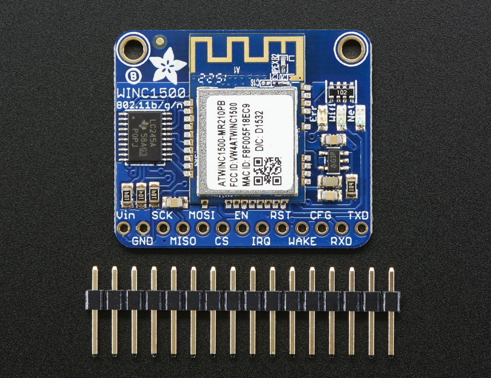
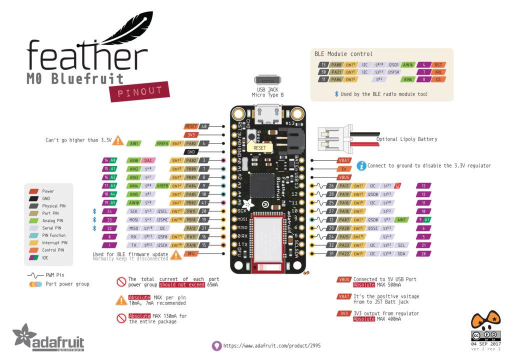

Give your plain ol' microcontroller project a lift with the Adafruit AirLift - a breakout board that lets you use the powerful ESP32 as a WiFi co-processor. You probably have your favorite microcontroller (like the ATmega328
or ATSAMD51), awesome peripherals and lots of libraries. But it doesn't have WiFi built in! So lets give that chip a best friend, the ESP32. This chip can handle all the heavy lifting of connecting to a WiFi network and
transferring data from a site, even if its using the latest TLS/SSL encryption (it has root certificates pre-burned in). Having WiFi managed by a separate chip means your code is simpler, you don't have to cache socket
data, or compile in & debug an SSL library. Send basic but powerful socket-based commands over 8MHz SPI for high speed data transfer. You can use 3V or 5V Arduino, any chip from the ATmega328 or up, although the '328 will
not be able to do very complex tasks or buffer a lot of data. It also works great with CircuitPython, a SAMD51/Cortex M4 minimum required since we need a bunch of RAM. All you need is an SPI bus and 2 control pins plus
a power supply that can provide up to 250mA during WiFi usage.
VIN - This is the power input. Can be 3.3-5VDC, USE A POWER SOURCE THAT CAN HAPPILY SUPPLY 250mA, we will regulate this down to 3.3V safely! This is probably a VBAT or USB pin not a 3.3V regulated output.
3vo - The output from the onboard 3.3V regulator, you can use up to ~50mA for other devices if you want to power them from the same chip
GND - Power and logic ground.
To keep transfers speedy, we use SPI not UART Serial. Serial is too slow and hard to synchronize. This uses more pins but the experience is much better! Classic SPI Pins: SCK - SPI Clock from your microcontroller, level
shifted so can be 3-5V logic MISO - SPI Data from the AirLift to the microcontroller, this is 3.3V logic out, can be read by 3-5V logic. This is tri-stated when not selected, so you can share the SPI bus with other devices. MOSI- SPI Data to the AirLift from the microcontroller, level shifted so can be 3-5V logic CS - SPI Chip Select from the microcontroller to start sending commands to the AirLift, level shifted so can be 3-5V logic Required
Control Pins: BUSY - this pin is an input from the AirLift, it will let us know when its ready for more commands to be sent. This is 3.3V logic out, can be read by 3-5V logic. This pin must be connected. !RESET - this
pin is an output to the AirLift. Set low to put the AirLift into reset. You should use this pin, even though you might be able to run for a short while without it, it's essential to 'kick' the chip if it ever gets into a locked
up state. Level shifted so can be 3-5V logic Optional Control Pins: GP0 - this is the ESP32 GPIO0 pin, which is used to put it into bootloading mode. It is also used if you like when the ESP32 is acting as a server,
to let you know data is ready for reading. It's not required, so you can leave it disconnected. RXI & TXO - Serial data in and Serial data out, used for bootloading new firmware only. Leave disconnected when not uploading
new WiFi firmware to the AirLift (which is a rare occurance) LEDs
There are 3 very tiny red, green and blue LEDs to the left of the ESP32, these are available in the Arduino library if you'd like to PWM them for a visual alert.
First, wire up your AirLift as follows. The following example shows it wired to a Feather M4 using SPI: Board VIN to Feather USB Board GND to Feather GND Board SCK to Feather SCK Board MISO to Feather MI> Board
MOSI to Feather MO Board CS to Feather D10 Board BUSY to Feather D9 Board !RST to Feather D6 You must use USB or VBAT for powering the AirLift Breakout!
You'll need to install the Adafruit CircuitPython ESP32SPI library on your CircuitPython board. First make sure you are running the latest version of Adafruit CircuitPython for your board. Next you'll need to install the
necessary libraries to use the hardware--carefully follow the steps to find and install these libraries from Adafruit's CircuitPython library bundle. Our CircuitPython starter guide has a great page on how to install the library
bundle.
You can manually install the necessary libraries from the bundle: adafruit_esp32spi.mpy
adafruit_requests.mpy
adafruit_bus_device
Before continuing make sure your board's lib folder or root filesystem has the adafruit_esp32spi.mpy, and adafruit_bus_device files and folders copied over. Next connect to the board's serial REPL so you are at the
CircuitPython >>> prompt.
Copy the following code to your code.py file on your microcontroller: import board import busio from digitalio import DigitalInOut from adafruit_esp32spi import adafruit_esp32spi import adafruit_esp32spi.adafruit_esp32spi_requests
as requests print("ESP32 SPI hardware test") esp32_cs = DigitalInOut(board.D10) esp32_ready = DigitalInOut(board.D9) esp32_reset = DigitalInOut(board.D7) spi = busio.SPI(board.SCK, board.MOSI, board.MISO) esp = adafruit_esp32spi.ESP_SPIcontrol(spi, esp32_cs, esp32_ready, esp32_reset) if esp.status == adafruit_esp32spi.WL_IDLE_STATUS: print("ESP32 found and in idle mode") print("Firmware vers.", esp.firmware_version) print("MAC addr:", [hex(i) for i in esp.MAC_address]) for ap in esp.scan_networks(): print("\t%s\t\tRSSI: %d" % (str(ap['ssid'], 'utf-8'), ap['rssi'])) print("Done!")
We expect people to share tons of projects as they build CircuitPython WiFi widgets. What we want to avoid is people accidentally sharing their passwords or secret tokens and API keys. So, we designed all our examples to use
a secrets.py file, that is in your CIRCUITPY drive, to hold secret/private/custom data. That way you can share your main project without worrying about accidentally sharing private stuff. Your secrets.py file should
look like this: # This file is where you keep secret settings, passwords, and tokens! # If you put them in the code you risk committing that info or sharing it secrets = { 'ssid' : 'home ssid', 'password'
: 'my password', 'timezone' : "America/New_York", # http://worldtimeapi.org/timezones 'github_token' : 'fawfj23rakjnfawiefa', 'hackaday_token' : 'h4xx0rs3kret', }
Inside is a python dictionary named secrets with a line for each entry. Each entry has an entry name (say 'ssid') and then a colon to separate it from the entry key 'home ssid' and finally a comma , At a minimum you'll
need the ssid and password for your local WiFi setup. As you make projects you may need more tokens and keys, just add them one line at a time. See for example other tokens such as one for accessing github or the hackaday API.
Other non-secret data like your timezone can also go here, just cause its called secrets doesn't mean you can't have general customization data in there! For the correct time zone string, look at http://worldtimeapi.org/timezones
and remember that if your city is not listed, look for a city in the same time zone, for example Boston, New York, Philadelphia, Washington DC, and Miami are all on the same time as New York. Of course, don't share your
secrets.py - keep that out of GitHub, Discord or other project-sharing sites.
Adafruit AirLift FeatherWing
×
Give your Feather project a lift with the Adafruit AirLift FeatherWing - a FeatherWing that lets you use the powerful ESP32 as a WiFi co-processor. You probably have your favorite Feather (like the Feather M4) that comes with
its own set of awesome peripherals and lots of libraries. But it doesn't have WiFi built in! So lets give that chip a best friend, the ESP32. This chip can handle all the heavy lifting of connecting to a WiFi network and
transferring data from a site, even if its using the latest TLS/SSL encryption (it has root certificates pre-burned in). Having WiFi managed by a separate chip means your code is simpler, you don't have to cache socket
data, or compile in & debug an SSL library. Send basic but powerful socket-based commands over 8MHz SPI for high speed data transfer. You can use 3V or 5V Arduino, any chip from the ATmega328 or up, although the '328 will
not be able to do very complex tasks or buffer a lot of data. It also works great with CircuitPython, a SAMD51/Cortex M4 minimum required since we need a bunch of RAM. All you need is an SPI bus and 2 control pins plus a
power supply that can provide up to 250mA during WiFi usage. We placed an ESP32 module on a FeatherWing with a separate 3.3V regulator, and a tri-state chip for MISO so you can share the SPI bus with other 'Wings. Comes
fully assembled and tested, pre-programmed with ESP32 SPI WiFi co-processor firmware that you can use in CircuitPython to use this into WiFi co-processsor over SPI + 2 pins. We also toss in some headers so you can solder it
in and plug into a doubler, but you can also pick up a set of stacking headers to stack above/below your Feather. We've tested this with all our Feathers and it should work just fine with them except the ESP8266 & ESP32
Feathers (cause they already have WiFi!). For use in Arduino, the '328 and '32u4 you can do basic connectivity and data transfer but they do not have a lot of RAM so we don't recommend them - use the M0, M4 or similar, for
best results! For CircuitPython use, a Feather M4 or nRF52840 works best - the M0 series does not have enough RAM in CircuitPython. The firmware on board is a slight variant of the Arduino WiFiNINA core, which works great!
At this time connection to Enterprise WiFi is not yet supported.
GND - Common power/logic ground. BAT - Positive voltage from JST on Feather for an optional LiPo battery. USB - Positive voltage to/from the Micro USB jack if connected. EN - 3.3V regulator's enable pin. It's pulled
up, so connect to ground to disable the 3.3V regulator 3V - this is the output from the 3.3V regulator. The regulator can supply 500mA peak but half of that is drawn by the ESP32, and it's a fairly power-hungry chip. So
if you need a ton of power for stuff like LEDs, motors, etc. Use the USB or BAT pins, and an additional regulator.
To keep transfers speedy, we use SPI not UART Serial. UART is too slow and hard to synchronize. This uses more pins but the experience is much better! Classic SPI Pins: SCK - SPI Clock from your microcontroller, level shifted
so can be 3-5V logic MISO - SPI Data from the AirLift to the microcontroller, this is 3.3V logic out, can be read by 3-5V logic. This is tri-stated when not selected, so you can share the SPI bus with other devices. MOSI- SPI Data to the AirLift from the microcontroller, level shifted so can be 3-5V logic ESPCS - SPI Chip Select from the microcontroller to start sending commands to the AirLift, level shifted so can be 3-5V logic Required Control Pins: ESPBUSY - this pin is an input from the AirLift, it will let us know when its ready for more commands to be sent. This is 3.3V logic out, can be read by 3-5V logic. This pin must be connected. ESPRST- this pin is an output to the AirLift. Set low to put the AirLift into reset. You should use this pin, even though you might be able to run for a short while without it, it's essential to 'kick' the chip if it ever gets
into a locked up state. Level shifted so can be 3-5V logic Optional Control Pins: ESPGPIO0 - this is the ESP32 GPIO0 pin, which is used to put it into bootloading mode. It is also used if you like when the ESP32 is
acting as a server, to let you know data is ready for reading. It's not required, you'll need to solder the pad on the bottom of the FeatherWing to connect it. ESPRX & ESPTX - Serial data in and Serial data out, used for
bootloading new firmware only. Leave disconnected when not uploading new WiFi firmware to the AirLift (which is a rare occurrence). You'll need to solder the two pads on the bottom of the FeatherWing to use these pins.
Adafruit ATWINC1500 WiFi Breakout
×
Connect your Arduino to the Internet with this fine new FCC-certified WiFi module from Atmel. This 802.11bgn-capable WiFi module is the best new thing for networking your devices, with SSL support and rock solid performance - running
our adafruit.io MQTT demo for a full weekend straight with no hiccups (it would have run longer but we had to go to work, so we unplugged it). We like these so much, they've completely replaced the CC3000 module on all our
projects.
The Adafruit ATWINC1500 WiFi Breakout uses SPI to communicate, so with about 6 wires, you can get your wired up and ready to go. Right now the Atmel-supplied library works great with Arduino M0's and M4s but does not work
on Uno (328P) and may not work on other Arduinos. You can clock it as fast as 12MHz for speedy, reliable packet streaming. And scanning/connecting to networks is very fast, a few seconds. This module works with 802.11b,
g, or n networks & supports WEP, WPA and WPA2 encryption. You can use it in Soft AP mode to create an ad-hoc network. For secure client connections, there is TLS 1.2 support in firmware 19.4.4! Since this is our new favoritest
SPI-protocol WiFi module we've decided to make a little breakout for it. The breakout comes with level shifting on all the input pins so you can use it with 3V or 5V logic. A 3.3V voltage regulator that can handle the 300mA
spikes lets you power from 3-5.5VDC. There's also 3 LEDs that you can control over the SPI interface (part of the library code) or you can have controlled by the Arduino library. They'll light up when connected to an SSID,
or transmitting data.
Connect your Arduino to the Internet with this fine new FCC-certified WiFi module from Atmel. This 802.11bgn-capable WiFi module is the best new thing for networking your devices, with SSL support and rock solid performance - running
our adafruit.io MQTT demo for a full weekend straight with no hiccups (it would have run longer but we had to go to work, so we unplugged it). We like these so much, they've completely replaced the CC3000 module on all our
projects. The ATWINC1500 uses SPI to communicate, so with about 5 or 6 wires, you can get your wired up and ready to go. Right now the Atmel-supplied library works great with Arduino M0 & M4, but won't work with 328P, or
32u4 and may not work on other Arduinos. You can clock it as fast as 12MHz for speedy, reliable packet streaming. Communication is done through the standard Client & Server interface so all your Ethernet & older WiFi code
is easy to adapt. Scanning/connecting to networks is very fast, a few seconds.

Power Pins • Vin - this is the power pin. Since the sensor chip uses 3 VDC, we have included a voltage regulator on board that will take 3-5VDC and safely convert it down. To power the board, give it the same power as the logic
level of your microcontroller - e.g. for a 5V micro like Arduino, use 5V • 3Vo - this is the 3.3V output from the voltage regulator, you can grab up to 100mA from this if you like • GND - common ground for power and logic I2C
Logic Pins • SCL - this is the I2C clock pin, connect to your microcontroller's I2C clock line. • SDA - this is the I2C data pin, connect to your microcontroller's I2C data line • STEMMA QT - These connectors allow you to connectors
to dev boards with STEMMA QTconnectors or to other things with various associated accessories Other Pins • INT -This is the interrupt pin. You can setup the VCNL4040 to pull this low when certain conditions are met such as
proximity or lux level thresholds being crossed.
Vin - this is the power-in pin. Connect to 3.3 - 5.5VDC The wifi module can draw up to 300mA during transmit (for small blips of time) So make sure that your power supply can supply it. GND - ground for signal and power
This is how you send and receive data from the module SCK - SPI clock input, 3V or 5V compliant MISO - SPI data out from module, 3.3V line level MOSI - SPI data into module, 3V or 5V compliant CS - SPI chip select,
pull down when transmitting to/from the ATWINC. By default this is pulled to Vin with a 100K resistor
EN - Enables the entire module, by default tied low with a 100K resistor. Tie to 3-5V to keep the module on all the time, connect to a ground signal to disable the module IRQ - Interrupts from the module, connect to your microcontroller's
INT input line. 3.3V logic level RST - Module reset, by default tied low with a 100K resistor. Pull high to bring out of reset. Wake - wake input signal, used to wake up the module (not used in existing code, but available
if you can figure it out!) 3-5V logic in CFG - allows you to select between SPI (default) or UART data transport. Since we don't have any UART code, keep disconnected RXD/TXD - UART data transport pins. Since we don't
have any UART code, keep disconnected
For this initial demo we'll be using an Arduino UNO to connect. You can also use an Arduino Zero, but you'll have to use the ICSP 6-pin header not pins 11,12,13 Vin - connect this to 3.3V or 5V, whichever is the logic voltage
of the microcontroller you're using. For UNO this will be 5V, for Zero its 3.3V GND - connect to common ground SCK - Connect to SPI clock. On UNO this is pin #13 on Zero its on the 6-pin ISP header MISO - Connect
to SPI MISO. On UNO this is pin #12 on Zero its on the 6-pin ISP header MOSI - Connect to SPI MOSI. On UNO this is pin #11 on Zero its on the 6-pin ISP header For the remaining pins, you can be a little flexible: CS - Connect to any digital I/O pin, we use #8 by default EN - connect this to 3.3V or 5V, whichever is the logic voltage of the microcontroller you're using. For UNO this will be 5V, for Zero its 3.3V; later on if you
want to enable/disable the module, connect it to a digial I/O pin IRQ - Connect to any digital I/O pin, preferrably one with an interrupt capability. We use #7 by default RST - Connect to any digital I/O pin. We use
#4 by default
Adafruit Bluefruit LE Shield
×
Would you like to add powerful and easy-to-use Bluetooth Low Energy to your robot, art or other electronics project? Heck yeah! With BLE now included in modern smart phones and tablets, its fun to add wireless connectivity. So
what you really need is the new Adafruit Bluefruit LE Shield for Arduino! The Bluefruit LE Shield makes it easy to add Bluetooth Low Energy connectivity to your Arduino or compatible. Solder in the included headers and
plug right in. It connects to your Arduino or other microcontroller using the hardware SPI interface (MISO, MOSI, SCK) plus a chip select line (default D8), interrupt line (default D7) and reset (default D4). You can
rearrange any and all the pins if you'd like, by cutting the jumpers underneath, and soldering jumper wires to your desired pins. This multi-function module can do quite a lot! For most people, they'll be very happy to
use the standard Nordic UART RX/TX profile. In this profile, the Bluefruit acts as a data pipe, that can 'transparently' transmit back and forth from your iOS or Android device. You can use our iOS App or Android App to get
started sending data from your Arduino to your phone quickly and painlessly. The board is capable of much more than just sending strings over the air! Thanks to an easy to learn AT command set, you have full control over
how the device behaves, including the ability to define and manipulate your own GATT Services and Characteristics, or change the way that the device advertises itself for other Bluetooth Low Energy devices to see. You can
also use the AT commands to query the die temperature, check the battery voltage, and more, check the connection RSSI or MAC address, and tons more. Really, way too long to list here!
ARM Cortex M0 core running at 16MHz 256KB flash memory 32KB SRAM Transport: SPI at 4MHz with HW IRQ (5 pins required) 5V-safe inputs (Arduino Uno friendly, etc.) On-board 3.3V voltage regulation Bootloader
with support for safe OTA firmware updates Easy AT command set to get up and running quickly
Would you like to add powerful and easy-to-use Bluetooth Low Energy to your robot, art or other electronics project? Heck yeah! With BLE now included in modern smart phones and tablets, its fun to add wireless connectivity. So
what you really need is the new Adafruit Bluefruit LE Shield for Arduino! The Bluefruit LE Shield makes it easy to add Bluetooth Low Energy connectivity to your Arduino or compatible. Solder in the included headers and
plug right in. It connects to your Arduino or other microcontroller using the hardware SPI interface (MISO, MOSI, SCK) plus a chip select line (default D8), interrupt line (default D7) and reset (default D4). You can
rearrange any and all the pins if you'd like, by cutting the jumpers underneath, and soldering jumper wires to your desired pins. If you want this in non-shield format, check out the SPI friend. If you like Serial communication
more than SPI, we also have a breakout can talk UART This multi-function module can do quite a lot! For most people, they'll be very happy to use the standard Nordic UART RX/TX profile. In this profile, the Bluefruit acts
as a data pipe, that can 'transparently' transmit back and forth from your iOS or Android device. You can use our iOS App or Android App to get started sending data from your Arduino to your phone quickly and painlessly.
5V: This is the power supply for the module, supply with 3.3-5V power supply input. This will be regulated down to 3.3V to run the chip GND: The common/GND pin for power and logic
SCK: This is the serial clock pin, by default connected to the Hardware SPI clock pin on the 2x3 ICSP header MISO: This is the Master In Slave Out SPI pin (nRF51 -> Arduino communication) by default connected to the Hardware
SPI MISO pin on the 2x3 ICSP header MOSI: This is the Master Out Slave In SPI pin (Arduino -> nRF51 communication) by default connected to the Hardware SPI MOSI pin on the 2x3 ICSP header CS: This is the Chip Select
SPI pin, which is used to indicate that the SPI device is currently in use. By default connected to digital #8 IRQ: This is the nRF51 -> Arduino 'interrupt' pin that lets the Arduino or MCU know when data is available on
the nRF51, indicating that a new SPI transaction should be initiated by the Arduino/MCU. By default connected to digital #7 RST: Holding this pin low will put the Bluefruit module into reset. By default connected to digital
#4
SWCLK: This is the SWD clock pin (SWCLK), 3v logic - for advanced hackers! SWDIO: This is the SWD data pin (SWDIO), 3v logic - for advanced hackers! F.RST: This is the factory reset pin. When all else fails and you did
something to really weird out your module, tie this pad to ground while powering up the module and it will factory reset. You should try the DFU reset method first though (see that tutorial page). DFU Button: pushing this
button when you power the shield up will force the Bluefruit LE module to enter a special firmware update mode to update the firmware over the air. Once the device is powered up, this pin can also be used to perform a factory
reset. Press the button for >5s until the two LEDs start to blink, then release the pin (set it to 5V or logic high) and a factory reset will be performed.
Adafruit Bluefruit LE SPI Friend
×
Would you like to add powerful and easy-to-use Bluetooth Low Energy to your robot, art or other electronics project? Heck yeah! With BLE now included in modern smart phones and tablets, its fun to add wireless connectivity.
So what you really need is the new Adafruit Bluefruit LE SPI Friend! The Bluefruit LE SPI Friend makes it easy to add Bluetooth Low Energy connectivity to anything with 4 or 5 GPIO pins. With SPI, you don't have to worry
about baud rates, flow control, or giving up a hardware UART port. Connect to your Arduino or other microcontroller using the common four-pin SPI interface (MISO, MOSI, SCK and CS) plus a 5th GPIO pin for interrupts (to
let the Arduino know when data or a response is ready). This multi-function module can do quite a lot! For most people, they'll be very happy to use the standard Nordic UART RX/TX connection profile. In this profile, the
Bluefruit acts as a data pipe, that can 'transparently' transmit back and forth from your iOS or Android device. You can use our iOS App or Android App, or write your own to communicate with the UART service. The board
is capable of much more than just sending strings over the air! Thanks to an easy to learn AT command set, you have full control over how the device behaves, including the ability to define and manipulate your own GATT Services
and Characteristics, or change the way that the device advertises itself for other Bluetooth Low Energy devices to see. You can also use the AT commands to query the die temperature, check the battery voltage, and more,
check the connection RSSI or MAC address, and tons more. Really, way too long to list here!
ARM Cortex M0 core running at 16MHz (nRF51822) 256KB flash memory 32KB SRAM Transport: SPI at 4MHz with HW IRQ (5 pins required) 5V-safe inputs (Arduino Uno friendly, etc.) On-board 3.3V voltage regulation Bootloader with support for safe OTA firmware updates Easy AT command set to get up and running quickly
VIN: This is the power supply for the module, supply with 3.3-16V power supply input. This will be regulated down to 3.3V to run the chip GND: The common/GND pin for power and logic
SCK: This is the serial clock pin, connected to SCK on your Arduino or MCU MISO: This is the Master In Slave Out SPI pin (nRF51 -> Arduino communication) MOSI: This is the Master Out Slave In SPI pin (Arduino -> nRF51 communication) CS: This is the Chip Select SPI pin, which is used to indicate that the SPI device is currently in use. IRQ: This is the nRF51 -> Arduino 'interrupt' pin that lets the Arduino or MCU know when data is available on the nRF51,
indicating that a new SPI transaction should be initiated by the Arduino/MCU.
DFU: Setting this pin low when you power the device up will force the Bluefruit LE module to enter a special firmware update mode to update the firmware over the air. Once the device is powered up, this pin can also be used
to perform a factory reset. Wire the pin to GND for >5s until the two LEDs start to blink, then release the pin (set it to 5V or logic high) and a factory reset will be performed. RST: Holding this pin low then releasing
it (or wiring it HIGH) will cause a system reset
On the back we also have a few breakouts! CLK: This is the SWD clock pin (SWCLK), 3v logic - for advanced hackers! DIO: This is the SWD data pin (SWDIO), 3v logic - for advanced hackers! F.RST: This is the factory reset
pin. When all else fails and you did something to really weird out your module, tie this pad to ground while powering up the module and it will factory reset. You should try the DFU reset method first though (see that tutorial
page).
3.3V: This is the output from the 3V regulator, for testing and also if you really need regulated 3V, up to 250mA available
Adafruit Feather 32u4 Bluefruit LE
×
Feather is the new development board from Adafruit, and like it's namesake it is thin, light, and lets you fly! We designed Feather to be a new standard for portable microcontroller cores. This is the Adafruit Feather 32u4
Bluefruit - our take on an 'all-in-one' Arduino-compatible + Bluetooth Low Energy with built in USB and battery charging. Its an Adafruit Feather 32u4 with a BTLE module, ready to rock! We have other boards in the Feather
family, check'em out here Bluetooth Low Energy is the hottest new low-power, 2.4GHz spectrum wireless protocol. In particular, its the only wireless protocol that you can use with iOS without needing special certification
and it's supported by all modern smart phones. This makes it excellent for use in portable projects that will make use of an iOS or Android phone or tablet. It also is supported in Mac OS X and Windows 8+ At the Feather
32u4's heart is at ATmega32u4 clocked at 8 MHz and at 3.3V logic, a chip setup we've had tons of experience with as it's the same as the Flora.This chip has 32K of flash and 2K of RAM, with built in USB so not only does it
have a USB-to-Serial program & debug capability built in with no need for an FTDI-like chip, it can also act like a mouse, keyboard, USB MIDI device, etc.
GND - this is the common ground for all power and logic BAT - this is the positive voltage to/from the JST jack for the optional Lipoly battery USB - this is the positive voltage to/from the micro USB jack if connected EN - this is the 3.3V regulator's enable pin. It's pulled up, so connect to ground to disable the 3.3V regulator 3V - this is the output from the 3.3V regulator, it can supply 500mA peak
#0 / RX - GPIO #0, also receive (input) pin for Serial1 and Interrupt #2 #1 / TX - GPIO #1, also transmit (output) pin for Serial1 and Interrupt #3 #2 / SDA - GPIO #2, also the I2C (Wire) data pin. There's no pull up on
this pin by default so when using with I2C, you may need a 2.2K-10K pullup. Also Interrupt #1 #3 / SCL - GPIO #3, also the I2C (Wire) clock pin. There's no pull up on this pin by default so when using with I2C, you may
need a 2.2K-10K pullup. Can also do PWM output and act as Interrupt #0. #5 - GPIO #5, can also do PWM output #6 - GPIO #6, can also do PWM output and analog input A7 #9 - GPIO #9, also analog input A9 and can do
PWM output. This analog input is connected to a voltage divider for the lipoly battery so be aware that this pin naturally 'sits' at around 2VDC due to the resistor divider #10 - GPIO #10, also analog input A10 and can
do PWM output. #11 - GPIO #11, can do PWM output. #12 - GPIO #12, also analog input A11 #13 - GPIO #13, can do PWM output and is connected to the red LED next to the USB jack A0 thru A5 - These are each analog
input as well as digital I/O pins. SCK/MOSI/MISO - These are the hardware SPI pins, used by the Bluefruit LE module too! You can use them as everyday GPIO pins if you don't activate the Bluefruit and keep the BLE CS pin
high.
However, we really recommend keeping them free as they should be kept available for the Bluefruit. If they are used, make sure its with a device that will kindly share the SPI bus! Also used to reprogram the chip with
an AVR programmer if you need.
Since not all pins can be brought out to breakouts, due to the small size of the Feather, we use these to control the BLE module #8 - used as the Bluefruit CS (chip select) pin #7 - used as the Bluefruit IRQ (interrupt
request) pin. #4 - used as the Bluefruit Reset pin Since these are not brought out there should be no risk of using them by accident!
Top Side RST - this is the Reset pin, tie to ground to manually reset the AVR, as well as launch the bootloader manually ARef - the analog reference pin. Normally the reference voltage is the same as the chip logic voltage
(3.3V) but if you need an alternative analog reference, connect it to this pin and select the external AREF in your firmware. Can't go higher than 3.3V! DFU - this is the force-DFU (device firmware upgrade) pin for over-the-air
updates to the Bluefruit module. You probably don't need to use this but its available if you need to upgrade! Check out the DFU Bluefruit Upgrades page for how to use it. Otherwise, keep it disconnected. Bottom Side On
the back we also have SWDIO/SWCLK/RESET pins, these are used for programming the Bluefruit LE module itself.
Adafruit Feather M0 Bluefruit LE
×

Feather is the new development board from Adafruit, and like its namesake it is thin, light, and lets you fly! We designed Feather to be a new standard for portable microcontroller cores. This is the Adafruit Feather M0 Bluefruit
LE - our take on an 'all-in-one' Arduino-compatible + Bluetooth Low Energy with built in USB and battery charging. It's an Adafruit Feather M0 with a BTLE module, ready to rock! We have other boards in the Feather family, check'em
out here. Bluetooth Low Energy is a hot, low-power, 2.4GHz spectrum wireless protocol. In particular, it's the only wireless protocol that you can use with iOS without needing special certification, and it's supported by
all modern smart phones. This makes it excellent for use in portable projects that will make use of an iOS or Android phone or tablet. It also is supported in Mac OS X and Windows 8+. We have quite a few BTLE-capable
Feathers (it's a popular protocol!) so check out our BT Feather guide for some comparison information. At the Feather M0's heart is an ATSAMD21G18 ARM Cortex M0 processor, clocked at 48 MHz and at 3.3V logic, the same one
used in the new Arduino Zero. This chip has a whopping 256K of FLASH (8x more than the Atmega328 or 32u4) and 32K of RAM (16x as much)! This chip comes with built in USB so it has USB-to-Serial program & debug capability
built in with no need for an FTDI-like chip. To make it easy to use for portable projects, we added a connector for any of our 3.7V Lithium polymer batteries and built in battery charging. You don't need a battery, it will
run just fine straight from the micro USB connector. But, if you do have a battery, you can take it on the go, then plug in the USB to recharge. The Feather will automatically switch over to USB power when its available.
We also tied the battery thru a divider to an analog pin, so you can measure and monitor the battery voltage to detect when you need a recharge.
Measures 2.0" x 0.9" x 0.28" (51mm x 23mm x 8mm) without headers soldered in Light as a (large?) feather - 5.7 grams ATSAMD21G18 @ 48MHz with 3.3V logic/power No EEPROM 3.3V regulator with 500mA peak current
output
USB native support, comes with USB bootloader and serial port debugging You also get tons of pins - 20 GPIO pins Hardware Serial, hardware I2C, hardware SPI support 8 x PWM pins 10 x analog inputs 1
x analog output Built in 100mA lipoly charger with charging status indicator LED Pin #13 red LED for general purpose blinking Power/enable pin 4 mounting holes Reset button
Feather is the new development board from Adafruit, and like it's namesake it is thin, light, and lets you fly! We designed Feather to be a new standard for portable microcontroller cores. This is the Adafruit Feather M0 Bluefruit
- our take on an 'all-in-one' Cortex M0+ Arduino-compatible + Bluetooth Low Energy with built in USB and battery charging. Its an Adafruit Feather M0 with a BTLE module, ready to rock! We have other boards in the Feather
family, check'em out here. Bluetooth Low Energy is the hottest new low-power, 2.4GHz spectrum wireless protocol. In particular, its the only wireless protocol that you can use with iOS without needing special certification
and it's supported by all modern smart phones. This makes it excellent for use in portable projects that will make use of an iOS or Android phone or tablet. It also is supported in Mac OS X and Windows 8+ At the Feather
M0's heart is an ATSAMD21G18 ARM Cortex M0 processor, clocked at 48 MHz and at 3.3V logic, the same one used in the new Arduino Zero. This chip has a whopping 256K of FLASH (8x more than the Atmega328 or 32u4) and 32K of
RAM (16x as much)! This chip comes with built in USB so it has USB-to-Serial program & debug capability built in with no need for an FTDI-like chip. To make it easy to use for portable projects, we added a connector for
any of our 3.7V Lithium polymer batteries and built in battery charging. You don't need a battery, it will run just fine straight from the micro USB connector. But, if you do have a battery, you can take it on the go,
then plug in the USB to recharge. The Feather will automatically switch over to USB power when its available. We also tied the battery thru a divider to an analog pin, so you can measure and monitor the battery voltage to
detect when you need a recharge.
GND - this is the common ground for all power and logic BAT - this is the positive voltage to/from the JST jack for the optional Lipoly battery USB - this is the positive voltage to/from the micro USB jack if connected EN - this is the 3.3V regulator's enable pin. It's pulled up, so connect to ground to disable the 3.3V regulator 3V - this is the output from the 3.3V regulator, it can supply 500mA peak
All logic is 3.3V Nearly all pins can do PWM output All pins can be interrupt inputs #0 / RX - GPIO #0, also receive (input) pin for Serial1 (hardware UART), also can be analog input #1 / TX - GPIO #1, also transmit
(output) pin for Serial1, also can be analog input #20 / SDA - GPIO #20, also the I2C (Wire) data pin. There's no pull up on this pin by default so when using with I2C, you may need a 2.2K-10K pullup. #21 / SCL - GPIO
#21, also the I2C (Wire) clock pin. There's no pull up on this pin by default so when using with I2C, you may need a 2.2K-10K pullup. #5 - GPIO #5 #6 - GPIO #6 #9 - GPIO #9, also analog input A7. This analog input
is connected to a voltage divider for the lipoly battery so be aware that this pin naturally 'sits' at around 2VDC due to the resistor divider #10 - GPIO #10 #11 - GPIO #11 #12 - GPIO #12 #13 - GPIO #13 and
is connected to the red LED next to the USB jack A0 - This pin is analog input A0 but is also an analog output due to having a DAC (digital-to-analog converter). You can set the raw voltage to anything from 0 to 3.3V, unlike
PWM outputs this is a true analog output A1 thru A5 - These are each analog input as well as digital I/O pins. SCK/MOSI/MISO (GPIO 24/23/22)- These are the hardware SPI pins, you can use them as everyday GPIO pins (but
recommend keeping them free as they are best used for hardware SPI connections for high speed and are shared with the BLE)
Since not all pins can be brought out to breakouts, due to the small size of the Feather, we use these to control the BLE module #8 - used as the Bluefruit CS (chip select) pin #7 - used as the Bluefruit IRQ (interrupt
request) pin. #4 - used as the Bluefruit Reset pin Since these are not brought out there should be no risk of using them by accident!
RST - this is the Reset pin, tie to ground to manually reset the ATSAMD, as well as launch the bootloader manually. ARef - the analog reference pin. Normally the reference voltage is the same as the chip logic voltage (3.3V)
but if you need an alternative analog reference, connect it to this pin and select the external AREF in your firmware.Can't go higher than 3.3V! DFU - this is the force-DFU (device firmware upgrade) pin for over-the-air
updates to the Bluefruit module. You probably don't need to use this but its available if you need to upgrade! Check out the DFU Bluefruit Upgrades page for how to use it. Otherwise, keep it disconnected.
There's two sets of SWD pins. These are used for program/debug of the two processors on the Feather. The round pads on the right are for the ATSAMD21G18 (main processor). The rectangular pads to the left are for the nrf51822
inside the BLE module. You cannot connect these together to debug both at the same time!
Adafruit Feather M0 WiFi
×
Feather is the new development board from Adafruit, and like its namesake it is thin, light, and lets you fly! We designed Feather to be a new standard for portable microcontroller cores. This is the Adafruit Feather M0 WiFi
w/ATWINC1500 - our take on an 'all-in-one' Arduino-compatible + high speed, reliable WiFi with built in USB and battery charging. Its an Adafruit Feather M0 with a WiFi module, ready to rock! We have other boards in the
Feather family, check'em out here. Connect your Feather to the Internet with this fine new FCC-certified WiFi module from Atmel. This 802.11bgn-capable WiFi module is the best new thing for networking your devices, with
built-in low-power management capabilites, Soft-AP, SSL TSL 1.2 support and rock solid performance. We were running our adafruit.io MQTT demo for a full weekend straight with no hiccups (it would have run longer but we had
to go to work, so we unplugged it). This module is very fast & easy to use in comparison to other WiFi modules we've used in the past . This module works with 802.11b, g, or n networks & supports WEP, WPA and WPA2 encryption. You
can connect to your own WiFi networks or create your own with "Soft AP" mode, where it becomes its own access point (we have an example of it creating a webserver that you can then control the Arduino's pins). You can clock
it as fast as 12MHz for speedy, reliable packet streaming. And scanning/connecting to networks is very fast, just a second or two. You might be wondering why use this when you can get a HUZZAH Feather? Well, you get: A highly-capable Cortex M0+ processor with ton more I/O pins, lots of 12-bit ADCs, a 10-bit DAC, 6 total SERCOMs that can each do SPI, I2C or UART (3 are used by the existing interfaces, leaving you 3), plenty of timers, PWMs,
DMA, native USB, and more (check out the Datasheet). The ATWINC has much lower power usage, about 12mA for the WINC & 10mA for the ATSAMD21 with auto-powermanagement on for the WiFi and no power management for the ARM. With
manual power management, you can get the WiFi module to down to ~2mA by putting it to sleep. This is compared to the ESP's ~70mA average current draw, and whose deep sleep mode requires a WDT reset. We also found that
we could stream more reliably (less 'bursty') with the ATWINC, although altogether the ESP has higher throughput. You also dont have to 'yield' all the time to the WiFi core, since its a separate chip. You get full reign
of the processor and timing Of course, both WiFi-capable Feathers have their strengths and tradeoffs, & we love both equally! At the Feather M0's heart is an ATSAMD21G18 ARM Cortex M0 processor, clocked at 48 MHz and
at 3.3V logic, the same one used in the new Arduino Zero. This chip has a whopping 256K of FLASH (8x more than the Atmega328 or 32u4) and 32K of RAM (16x as much)! This chip comes with built in USB so it has USB-to-Serial
program & debug capability built in with no need for an FTDI-like chip. For advanced users who are comfortable with ASF, the SWDIO/SWCLK pins are available on the bottom, and when connected to a CMSIS-DAP debugger can be
used to use Atmel Studio for debugging. To make it easy to use for portable projects, we added a connector for any of our 3.7V Lithium polymer batteries and built in battery charging. You don't need to use a battery,
it will run just fine straight from the micro USB connector. But, if you do have a battery, you can take it on the go, then plug in the USB to recharge. The Feather will automatically switch over to USB power when its
available. We also tied the battery through a divider to an analog pin, so you can measure and monitor the battery voltage to detect when you need a recharge.
Measures 2.1" x 0.9" x 0.3" (53.65mm x 23mm x 8mm) without headers soldered in. Note it is 0.1" longer than most Feathers Light as a (large?) feather - 6.1 grams ATSAMD21G18 @ 48MHz with 3.3V logic/power 256KB FLASH,
32KB SRAM, No EEPROM 3.3V regulator (AP2112K-3.3) with 600mA peak current output, WiFi can draw 300mA peak during xmit USB native support, comes with USB bootloader and serial port debugging You also get tons of
pins - 20 GPIO pins Hardware Serial, hardware I2C, hardware SPI support 8 x PWM pins 10 x analog inputs 1 x analog output Built in 200mA lipoly charger with charging status indicator LED Pin #13 red
LED for general purpose blinking Power/enable pin 4 mounting holes Reset button
Feather is the new development board from Adafruit, and like its namesake it is thin, light, and lets you fly! We designed Feather to be a new standard for portable microcontroller cores. This is the Adafruit Feather M0 WiFi
w/ATWINC1500 - our take on an 'all-in-one' Arduino-compatible + high speed, reliable WiFi with built in USB and battery charging. Its an Adafruit Feather M0 with a WiFi module, ready to rock! We have other boards in the
Feather family, check'em out here. Connect your Feather to the Internet with this fine new FCC-certified WiFi module from Atmel. This 802.11bgn-capable WiFi module is the best new thing for networking your devices, with
built-in low-power management capabilites, Soft-AP, SSL support and rock solid performance. We were running our adafruit.io MQTT demo for a full weekend straight with no hiccups (it would have run longer but we had to go
to work, so we unplugged it). This module is very fast & easy to use in comparison to other WiFi modules we've used in the past.
GND - this is the common ground for all power and logic BAT - this is the positive voltage to/from the JST jack for the optional Lipoly battery USB - this is the positive voltage to/from the micro USB jack if connected EN - this is the 3.3V regulator's enable pin. It's pulled up, so connect to ground to disable the 3.3V regulator 3V - this is the output from the 3.3V regulator, it can supply 600mA peak
All logic is 3.3V Nearly all pins can do PWM output All pins can be interrupt inputs #0 / RX - GPIO #0, also receive (input) pin for Serial1 (hardware UART), also can be analog input. #1 / TX - GPIO #1, also transmit
(output) pin for Serial1, also can be analog input. #20 / SDA - GPIO #20, also the I2C (Wire) data pin. There's no pull up on this pin by default so when using with I2C, you may need a 2.2K-10K pullup. #21 / SCL - GPIO
#21, also the I2C (Wire) clock pin. There's no pull up on this pin by default so when using with I2C, you may need a 2.2K-10K pullup. #5 - GPIO #5 #6 - GPIO #6 #9 - GPIO #9, also analog input A7. This analog input
is connected to a voltage divider for the lipoly battery so be aware that this pin naturally 'sits' at around 2VDC due to the resistor divider #10 - GPIO #10 #11 - GPIO #11 #12 - GPIO #12 #13 - GPIO #13 and
is connected to the red LED next to the USB jack A0 - This pin is analog input A0 but is also an analog output due to having a DAC (digital-to-analog converter). You can set the raw voltage to anything from 0 to 3.3V, unlike
PWM outputs this is a true analog output. A1 thru A5 - These are each analog input as well as digital I/O pins. SCK/MOSI/MISO (GPIO 24/23/22)- These are the hardware SPI pins, you can use them as everyday GPIO pins
(but recommend keeping them free as they are best used for hardware SPI connections for high speed).
#2 - used as the ENable pin for the WiFi module, by default pulled down low, set HIGH to enable WiFi #4 - used as the Reset pin for the WiFi module, controlled by the library #7 - used as the IRQ interrupt request pin for
the WiFi module, controlled by the library #8 - used as the Chip Select pin for the WiFi module, used to select it for SPI data transfer MOSI / MISO /SCK - the SPI pins are also used for WiFi module communication Green LED - the top LED, in green, will light when the module has connected to an SSID Yellow LED - the bottom LED, in yellow, will blink during data transfer
RST - this is the Reset pin, tie to ground to manually reset the AVR, as well as launch the bootloader manually. ARef - the analog reference pin. Normally the reference voltage is the same as the chip logic voltage (3.3V) but
if you need an alternative analog reference, connect it to this pin and select the external AREF in your firmware. Can't go higher than 3.3V! Wake - connected to the Wake pin on the WiFi module, not used at this time but
it's there if you want it. SWCLK & SWDIO - These pads on the bottom are used to program the chip. They can also be connected to an SWD debugger.
Adafruit Feather nRF52 Pro
×
The Adafruit Feather nRF52 Pro is another Bluetooth Low Energy board for advanced projects and users who want to use a fully open source Bluetooth Low Energy 5.0 stack. It has a native-Bluetooth chip, the nRF52832, as well as
built in USB Serial and battery charging! We have other boards in the Feather family, check'em out here. This is a special Feather - unlike the rest of the Feather family, this board is not for use with Arduino IDE. Instead,
it is for use with Mynewt only! We have programmed it with the Mynewt bootloader and updated the hardware to add an SWD connector and an additional DFU button. If you want to use the nRF52 with Arduino IDE please check out
the Bluefruit nRF52 Feather which works out-of-the-box with our Arduino board support package. This Feather is for advanced users only, you will be interacting with the Mynewt RTOS rather than Arduino, and you cannot easily
go back-and-forth without an SWD programmer. We have quite a few BTLE-capable Feathers (it's a popular protocol!) so check out our BT Feather guide for some comparison information. At this point, the tools that Mynewt
relies on are really aimed at running on a POSIX-type system (Linux, OS X, Mingw etc.) Windows users can also make use of the Docker container available on the Mynewt website. This chip has twice the flash, SRAM and performance
of the earlier nRF51-based modules, and can do a lot of heavy lifting. That extra processing power and memory mean you can now run an RTOS for fast development of complex projects. This board was designed to work with the
Apache Mynewt operating system, which is released by the Apache Foundation under the permissive and commercial-friendly Apache license. Apache Mynewt includes a number of professionally written networking stacks (BLE 5.0,
OIC/OCF, etc.), development tools, and professional project management features like a secure bootloader that allows you to cryptographically sign firmware images and verify them during device updates. The Adafruit Feather
nRF52 Pro ships pre-programmed with the Mynewt serial bootloader that allows you to flash firmware to the device directly from the command-line using the on-board USB Serial converter and the 'newtmgr' tool, so you can get
started right away with no additional hardware required. For more advanced debugging, however, you can use a Segger J-Link and the on-board SWD debug connector, which gives you access to a more powerful set of development
tools and options. We also have a custom Mynewt Manager application that we've written for iOS that allows you to perform over the air firmware updates, and get live updates of the tasks running in the task manager, or
to see any statistics generated by the internal reporting systems that are part of the OS.
ARM Cortex M4F (with HW floating point acceleration) running at 64MHz 512KB flash and 64KB SRAM Built in USB Serial converter for fast and efficient programming and debugging Bluetooth Low Energy compatible 2.4GHz radio
(Details available in the nRF52832 product specification) FCC / IC / TELEC certified module Up to +4dBm output power 1.7v to 3.3v operation with internal linear and DC/DC voltage regulators 19 GPIO, 8 x 12-bit
ADC pins, up to 12 PWM outputs (3 PWM modules with 4 outputs each) Pin #17 red LED for general purpose blinking Power/enable pin Measures 2.0" x 0.9" x 0.28" (51mm x 23mm x 8mm) without headers soldered in Light
as a (large?) feather - 5.7 grams 4 mounting holes Reset button SWD connector for debugging 100% open source firmware when used with Apache Mynewt
Because of complex and expensive Bluetooth SIG certification requirements, the nRF52 Pro doesn't ship with any default Bluetooth functionality on the post-production firmware, since at present the Mynewt BLE stack has not gone
through the certification process with the Bluetooth SIG. We aren't able to ship BLE functionality out of the box without this certification. In order to use Mynewt in a production product, you will need to go through the
certification process for your product, although you are free to develop locally with Mynewt in a test environment. The only Bluetooth Low Energy stack certified to run on the nRF52 modules with no additional work on your
part is the Nordic SoftDevice, which is used in the Arduino variant of these boards and can be flashed onto the nRF52 Pro using your choice of ARM SWD debugger, such as the Segger J-Link.
3.3V Output: This two pins are connected to the output of the on board 3.3V regulator. They can be used to supply 3.3V power to external sensors, breakouts or Feather Wings. LIPO Input (VBAT): This is the voltage supply off
the optional LIPO cell that can be connected via the JST PH connector. It is nominally ~3.5-4.2V. VREG Enable: This pin can be set to GND to disable the 3.3V output from the on board voltage regulator. By default it is
set high via a pullup resistor. USB Power (VBUS): This is the voltage supply off USB connector, nominally 4.5-5.2V.
The 8 available analog inputs can be configured to generate 8, 10 or 12-bit data (or 14-bits with over-sampling), at speeds up to 200kHz (depending on the bit-width of the values generated), based on either an internal 0.6V reference
or the external supply. The following default values are used: Default voltage range: 0-3.6V (uses the internal 0.6V reference with 1/6 gain) Default resolution: 10-bit (0..1023)
Any GPIO pin can be configured as a PWM output, using the dedicated PWM block. Three PWM modules can provide up to 12 PWM channels with individual frequency control in groups of up to four channels.
I2C pins on the nRF52832 require external pullup resistors to function, which are not present on the Adafruit nRF52 Feather by default. You will need to supply external pullups to use these. All Adafruit I2C breakouts have appropriate
pullups on them already, so this normally won't be an issue for you.
Adafruit Feather nRF52840 Express
×
The Adafruit Feather nRF52840 Express is the new Feather family member with Bluetooth Low Energy and native USB support featuring the nRF52840! It's our take on an 'all-in-one' Arduino-compatible + Bluetooth Low Energy with built
in USB plus battery charging. With native USB it's even ready to join the CircuitPython party. We have other boards in the Feather family, check'em out here. This chip has twice the flash, and four times the SRAM of
it's earlier sibling, the nRF52832 - 1 MB of FLASH and 256KB of SRAM. Compared to the nRF51, this board has 4-8 times more of everything. For this chip, we've added Arduino IDE support - you can program the nRF52840 chip
directly to take full advantage of the Cortex-M4 processor, and then calling into the Nordic SoftDevice radio stack when you need to communicate over BLE. Since the underlying API and peripherals are the same for the '832
and '840, you can supercharge your older nRF52832 projects with the same exact code, with a single recompile! We've also chosen this chip for our first BLE-friendly CircuitPython board! CircuitPython works best with disk
drive access, and this is the only BLE-plus-USB-native chip that has the memory to handle running a the little Python interpreter. The massive RAM and speedy Cortex M4F chip makes this a good match. Please note at this
time we only have BLE stack support in Arduino. CircuitPython BLE stack support is still a work-in-progress! It's got tons of awesome peripherals: plenty of GPIO, analog inputs, PWM, timers, etc. Best of all, it's got that
native USB! Finally, no need for a separate USB serial chip like CP2104 or FT232. Serial is handled as a USB CDC descriptor, and the chip can act like a keyboard, mouse, MIDI device or even disk drive. (Note that we don't have
support for anything but CDC for Arduino at this time) Some other upgrades we've tossed in are an extra 'USER' switch that could be used to trigger OTA updates (or whatever you choose), a NeoPixel LED for status updates,
2 MB of QSPI Flash for storing CircuitPython files, and a SWD connector. We have quite a few BTLE-capable Feathers (it's a popular protocol!) so check out our BT Feather guide for some comparison information. We pre-programed
the chip with our UF2 bootloader, which can use either commandline UART programming with nrfutil (we use this for Arduino) or drag-n-drop mass storage, for CircuitPython installation and also because mass-storage-drive bootloaders
make updating firmware so easy. Want to program the chip directly? You can use our command line tools with your favorite editor and toolchain. If you want to use an SWD programmer/debugger (for even more advanced usage),
we have a standard 2x5 0.05" connector. Best of all, we've done all the heavy lifting of getting the low level BLE stack into shape so you can focus on your project from day one! The example code works great with our existing
iOS and Android app.
ARM Cortex M4F (with HW floating point acceleration) running at 64MHz 1MB flash and 256KB SRAM Native Open Source USB stack - pre-programmed with UF2 bootloader Bluetooth Low Energy compatible 2.4GHz radio (Details
available in the nRF52840 product specification) FCC / IC / TELEC certified module Up to +8dBm output power 1.7v to 3.3v operation with internal linear and DC/DC voltage regulators 21 GPIO, 6 x 12-bit ADC pins,
up to 12 PWM outputs (3 PWM modules with 4 outputs each) Pin #3 red LED for general purpose blinking, NeoPixel for colorful feedback Power/enable pin Measures 2.0" x 0.9" x 0.28" (51mm x 23mm x 7.2mm) without headers
soldered in Light as a (large?) feather - 6 grams 4 mounting holes Reset button SWD connector for debugging
D2/NFC2: The D2 pin is uses the same pad as one-half of the NFC antenna pins. By default, the nRF52840 Feather ships with these pins configured for GPIO mode, which is done by writing a value to the UICR flash config memory. If
you wish to use NFC, you will need to erase the UICR memory which requires erasing the entire chip, and you will need a Segger J-Link to reflash the bootloader and firmware.
3V: This pin is connected to the output of the on board 3.3V regulator. It can be used to supply 3.3V power to external sensors, breakouts or Feather Wings. LIPO Input (Bat): This is the voltage supply off the optional LIPO
cell that can be connected via the JST PH connector. It is nominally ~3.5-4.2V. VREG Enable (En): This pin can be set to GND to disable the 3.3V output from the on board voltage regulator. By default it is set high via
a pullup resistor. USB Power (USB): This is the voltage supply off USB connector, nominally 4.5-5.2V.
The 6 available analog inputs (A0 .. A5) can be configured to generate 8, 10 or 12-bit data (or 14-bits with over-sampling), at speeds up to 200kHz (depending on the bit-width of the values generated), based on either an internal
0.6V reference or the external supply. The following default values are used: Default voltage range: 0-3.6V (uses the internal 0.6V reference with 1/6 gain) Default resolution: 12-bit (0..4096) Default mV per
lsb (assuming 3.6V and 12-bit resolution): 1 LSB = 0.87890625 mV An additional two ADC pins are available but pre-connected to provide specific functionality: AREF (A7 / P0.31), which can be used as an optional external
analog reference. This pin can be accessed in code via PIN_AREF or A7. If using an external AREF, this must be less than or equal to VDD, which is usually 3.3V! VDIV (A6 / P0.29): This pin is hard wired to a voltage-divider
on the LIPO battery input, allowing you to safely measure the LIPO battery level on your device. If possible, you should avoid using this pin as an input because you will lose the ability to read the battery voltage. You
can use it as an output just make sure to switch the pin to analog input when you want to do the battery read, then back to output when toggling pins
Any GPIO pin can be configured as a PWM output, using the dedicated PWM block. Three PWM modules can provide up to 12 PWM channels with individual frequency control in groups of up to four channels.
I2C pins on the nRF52840 require external pullup resistors to function, which are not present on the Adafruit nRF52840 Feather by default. You will need to supply external pullups to use these. All Adafruit I2C breakouts have
appropriate pullups on them already, so this normally won't be an issue for you.
A tactile switch is provided for use in your projects, which is connected to P1.02 and is accessible in code as D7. Holding this button down coming out of a board reset will also force the device to enter and remain in USB
bootloader mode, which can be useful if you lock your board up with bad application code!
For advanced debugging or to reprogram your nRF52840 Feather Express, a 2*5 pin 0.05" standard SWD header is populated on the boards. This allows you to use something like a Segger J-Link and a 1.27mm SWD cable to connect from
your PC to the nRF52840.
There are numerous LEDs available on the nRF52840 Feather Express which can be used as status indicators, or be placed under user control in your application: Basic LEDs There are three basic LEDs available on the nRF52840
Feather Express: D3 is a general-purpose RED LED that can be used for blinky, or other purposes. When running in bootloader mode it is used under the control of the bootloader as a status indicator, with a rapid blinky
pattern indicating that the board is currently in DFU bootloader mode. This LED is on D3 (or P1.15). Programmatically you can access this LED as LED_RED. CONN can be used as a general-purpose BLUE LED, but is generally
controlled by the examples to indicate connection status for BLE. This LED is on P1.10. Programmatically you can access this LED as LED_BLUE. CHG indicates that the on-board LIPO charger is currently charging the connected
LIPO battery cell, using USB as a power supply.
Since this board is part of the Express family for CircuitPython, a 2MB Quad-SPI flash is also included on the board by default. QSPI requires 6 pins, which are not broken out on the 0.1" pin headers to avoid conflicts. QSPI is neat because it allows you to have 4 data in/out lines instead of just SPI's single line in and single line out. This means that QSPI is at least 4 times faster. But in reality is at least 10x faster because you
can clock the QSPI peripheral much faster than a plain SPI peripheral
Adafruit HUZZAH ESP8266 Breakout
×
Add Internet to your next project with an adorable, bite-sized WiFi microcontroller, at a price you like! The ESP8266 processor from Espressif is an 80 MHz microcontroller with a full WiFi front-end (both as client and access point)
and TCP/IP stack with DNS support as well. While this chip has been very popular, its also been very difficult to use. Most of the low cost modules are not breadboard friendly, don't have an onboard 500mA 3.3V regulator
or level shifting, and aren't CE or FCC emitter certified....UNTIL NOW! The Adafruit HUZZAH ESP8266 breakout is what we designed to make working with this chip super easy and a lot of fun. We took a certified module
with an onboard antenna, and plenty of pins, and soldered it onto our designed breakout PCBs. We added in: Reset button, User button that can also put the chip into bootloading mode, Red LED you can blink, Level
shifting on the UART and reset pin, 3.3V out, 500mA regulator (you'll want to assume the ESP8266 can draw up to 250mA so budget accordingly) Two diode-protected power inputs (one for a USB cable, another for a battery) Two parallel, breadboard-friendly breakouts on either side give you access to: 1 x Analog input (1.0V max) 9 x GPIO (3.3V logic), which can also be used for I2C or SPI 2 x UART pins 2 x 3-6V power inputs, reset,
enable, LDO-disable, 3.3V output One breakout at the end has an "FTDI" pinout so you can plug in an FTDI or console cable to upload software and read/write debugging information via the UART. When you're done with your
coding, remove the cable, and this little module can be embeded into your project box.
The ESP8266 requires 3.3V power voltage and peaks at 500mA or so of current for small periods of time. You'll want to assume the ESP8266 can draw up to 250mA so budget accordingly. To make it easier to power, we put a high-current-capable
3.3V voltage regulator on the board. It can take 3.4-6V in but you should stick to 4-6V since the ESP8288 has high current usage when WiFi is on. There are two inputs for the regulator, V+ and VBat. Both have Schottky diodes
so you can connect both at different voltages and the regulator will simply power from the higher voltage. The V+ pin is also on the FTDI/serial header at the bottom edge.We recommend connecting your LiPoly or AA battery
pack directly to VBat and then keeping V+ unused for when an FTDI cable is attached. You can also use the extra V+ pin for getting the 5V USB power from the FTDI connector for servos, NeoPixels, etc!
RX and TX are the serial control and bootloading pins, and are how you will spend most of your time communicating with the ESP module. The TX pin is the output from the module and is 3.3V logic. The RX pin is the input
into the module and is 5V compliant (there is a level shifter on this pin) The pins are available in two places, one set is on the right side breakout. The same pins are also at the bottom on the "FTDI/Serial" breakout.
This breakout has 9 GPIO: #0, #2, #4, #5, #12, #13, #14, #15, #16 all GPIO are 3.3V logic level in and out, and are not 5V compatible. Read the full spec sheet to learn more about the GPIO pin limits, but be aware the maximum current
drawn per pin is 12mA. These pins are general purpose and can be used for any sort of input or output. Most also have the ability to turn on an internal pullup. Many have special functionality: GPIO #0, which does not
have an internal pullup, and is also connected to both a mini tactile switch and red LED. This pin is used by the ESP8266 to determine when to boot into the bootloader. If the pin is held low during power-up it will start bootloading!
That said, you can always use it as an output, and blink the red LED. GPIO #2, is also used to detect boot-mode. It also is connected to the blue LED that is near the WiFi antenna. It has a pullup resistor connected to
it, and you can use it as any output (like #0) and blink the blue LED. GPIO #15, is also used to detect boot-mode. It has a pulldown resistor connected to it, make sure this pin isn't pulled high on startup. You can always
just use it as an output GPIO #16 can be used to wake up out of deep-sleep mode, you'll need to connect it to the RESET pin GPIO #4 and #5 are used for I2C SDA and SCL (respectively) by default on Arduino IDE. We recommend
that if you are using Arduino, connect your I2C devices there! Rev A of this board had GPIO #4 and #5 swapped (the modules changed pinouts on us) so if #4/#5 aren't working for you, try swapping!
There is also a single analog input pin called A. This pin has a ~1.0V maximum voltage, so if you have an analog voltage you want to read that is higher, it will have to be divided down to 0 - 1.0V range.
We have a few other pins for controlling the ESP8266 LDO - this is the enable pin for the regulator. By default it's pulled high, when connected to ground it will turn off the 3.3V regulator and is an easy way to cut power
off to the whole setup. There is a 10K pullup is to whatever has a higher voltage, V+ or VBat. (See the schematic if you're unclear). RST - this is the reset pin for the ESP8266, pulled high by default. When pulled down
to ground momentarily it will reset the ESP8266 system. This pin is 5V compliant. EN (CH_PD) - This is the enable pin for the ESP8266, pulled high by default. When pulled down to ground momentarily it will reset the ESP8266
system. This pin is 3.3V logic only.
Adafruit HUZZAH32
×
Aww yeah, it's the Feather you have been waiting for! The HUZZAH32 is our ESP32-based Feather, made with the official WROOM32 module. We packed everything you love about Feathers: built in USB-to-Serial converter, automatic bootloader
reset, Lithium Ion/Polymer charger, and just about all of the GPIOs brought out so you can use it with any of our Feather Wings. We have other boards in the Feather family, check'em out here. That module nestled in at
the end of this Feather contains a dual-core ESP32 chip, 4 MB of SPI Flash, tuned antenna, and all the passives you need to take advantage of this powerful new processor. The ESP32 has both WiFi and Bluetooth Classic/LE
support. That means it's perfect for just about any wireless or Internet-connected project. Because it's part of our Feather eco-system, you can take advantage of the 50+ Wings that we've designed to add all sorts of cool
accessories.
The ESP32 is a perfect upgrade from the ESP8266 that has been so popular. In comparison, the ESP32 has way more GPIO, plenty of analog inputs, two analog outputs, multiple extra peripherals (like a spare UART), two cores
so you don't have to yield to the WiFi manager, much higher-speed processor, etc.etc! We think that as the ESP32 gets traction, we'll see more people move to this chip exclusively, as it is so full-featured. Please
note: The ESP32 is still targeted to developers. Not all of the peripherals are fully documented with example code, and there are some bugs still being found and fixed. We got all of our Featherwings working under Arduino
IDE, so you can expect things like I2C and SPI and analog reads to work. But other elements are still under development. For that reason, we recommend this Feather for makers who have some experience with microcontroller
programming, and not as a first dev board.
240 MHz dual core Tensilica LX6 microcontroller with 600 DMIPS
Integrated 520 KB SRAM
Integrated 802.11b/g/n HT40 Wi-Fi transceiver, baseband, stack and LWIP
Integrated dual mode Bluetooth (classic and BLE)
4 MByte flash include in the WROOM32 module
On-board PCB antenna
Ultra-low noise analog amplifier
Hall sensor
10x capacitive touch interface
32 kHz crystal oscillator
3 x UARTs (only two are configured by default in the Feather Arduino IDE support, one UART is used for bootloading/debug)
3 x SPI (only one is configured by default in the Feather Arduino IDE support)
2 x I2C (only one is configured by default in the Feather Arduino IDE support)
12 x ADC input channels
2 x I2S Audio
2 x DAC
PWM/timer input/output available on every GPIO pin
OpenOCD debug interface with 32 kB TRAX buffer
SDIO master/slave 50 MHz
SD-card interface support
GND - this is the common ground for all power and logic BAT - this is the positive voltage to/from the JST jack for the optional Lipoly battery USB - this is the positive voltage to/from the micro USB jack if connected EN - this is the 3.3V regulator's enable pin. It's pulled up, so connect to ground to disable the 3.3V regulator 3V - this is the output from the 3.3V regulator. The regulator can supply 500mA peak but half of that is drawn
by the ESP32, and it's a fairly power-hungry chip. So if you need a ton of power for stuff like LEDs, motors, etc. Use the USB or BAT pins, and an additional regulator.
RX and TX are the additional Serial1 pins, and are not connected to the USB/Serial converter. That means you can use them to connect to UART-devices like GPS's, fingerprint sensors, etc. The TX pin is the output from the module.
The RX pin is the input into the module. Both are 3.3V logic.
You can use the ESP32 to control I2C and SPI devices, sensors, outputs, etc. If using with Arduino, the standard Wire and SPI devices work as you'd expect! Note that the I2C pins do not have pullup resistors already! You must
add them if you want to communicate with an I2C device.
There are tons of GPIO and analog inputs available to you for connecting LEDs, buttons, switches, sensors, etc. Here's the remaining pins available. Bottom row: A0 - this is an analog input A0 and also an analog output
DAC2. It can also be used as a GPIO #26. It uses ADC #2 A1 - this is an analog input A1 and also an analog output DAC1. It can also be used as a GPIO #25. It uses ADC #2 A2 - this is an analog input A2 and also GPI
#34. Note it is not an output-capable pin! It uses ADC #1 A3 - this is an analog input A3 and also GPI #39. Note it is not an output-capable pin! It uses ADC #1 A4 - this is an analog input A4 and also GPI #36. Note
it is not an output-capable pin! It uses ADC #1 A5 - this is an analog input A5 and also GPIO #4. It uses ADC #2 21 - General purpose IO pin #21 Top row: 13 - This is GPIO #13 and also an analog input A12 on
ADC #2. It's also connected to the red LED next to the USB port 12 - This is GPIO #12 and also an analog input A11 on ADC #2. This pin has a pull-down resistor built into it, we recommend using it as an output only, or
making sure that the pull-down is not affected during boot. 27 - This is GPIO #27 and also an analog input A10 on ADC #2 33 - This is GPIO #33 and also an analog input A9 on ADC #1. It can also be used to connect a
32 KHz crystal. 15 - This is GPIO #15 and also an analog input A8 on ADC #2 32 - This is GPIO #32 and also an analog input A7 on ADC #1. It can also be used to connect a 32 KHz crystal. 14 - This is GPIO #14 and
also an analog input A6 on ADC #2 There's also an external analog input A13 - This is general purpose input #35 and also an analog input A13, which is a resistor divider connected to the VBAT line.
Adafruit PyPortal
×
PyPortal, our easy-to-use IoT device that allows you to create all the things for the “Internet of Things” in minutes. Make custom touch screen interface GUIs, all open-source, and Python-powered using tinyJSON / APIs to get
news, stock, weather, cat photos, and more – all over Wi-Fi with the latest technologies. Create little pocket universes of joy that connect to something good. Rotate it 90 degrees, it’s a web-connected conference badge
#badgelife.
The PyPortal uses an ATMEL (Microchip) ATSAMD51J20, and an Espressif ESP32 Wi-Fi coprocessor with TLS/SSL support built-in. PyPortal has a 3.2″ 320 x 240 color TFT with resistive touch screen. PyPortal includes: speaker,
light sensor, temperature sensor, NeoPixel, microSD card slot, 8MB flash, plug-in ports for I2C and 2 analog/digital pins, 3D files for custom enclosures / lanyard fastening. Open-source hardware, and Open-Source software,
CircuitPython and Arduino. The device shows up as a USB drive and the code (Python) can be edited in any IDE, text editor, etc. The M4 and ESP32 are a great couple - and each bring their own strengths to this board. The
SAMD51 M4 has native USB so it can show up like a disk drive, act as a MIDI or HID keyboard/mouse, and of course bootload and debug over a serial port. It also has DACs, ADC, PWM, and tons of GPIO. Meanwhile, the ESP32 has
secure WiFi capabilities, and plenty of Flash and RAM to buffer sockets. By letting the ESP32 focus on the complex TLS/SSL computation and socket buffering, it frees up the SAMD51 to act as the user interface. You get
a great programming experience thanks to the native USB with files available for drag-n-drop, and you don't have to spend a ton of processor time and memory to do SSL encryption/decryption and certificate management. It's the
best of both worlds! Please note: You may get a version with DigiKey + Analog Devices branding or in plain style. The hardware is identical.
The main processor chip is the ATSAMD51J20 Cortex M4 running at 120MHz with 3.3v logic/power. It has 1MB of Flash and 256KB of RAM. We also include 8 MB of QSPI Flash for storing images, sounds, animations, whatever!
The WiFi capability uses an Espressif ESP32 Wi-Fi coprocessor with TLS/SSL support built-in. The ESP32 uses the SPI port for data, and also uses a CS pin (board.ESP_CS or Arduino 8), Ready/Busy pin (board.ESP_BUSY or Arduino
5), and reset pin (board.ESP_RESET or Arduino 7) For advanced use or reprogramming, we also connect the main RX/TX UART to the ESP32 - on Arduino that's Serial1 and in CircuitPython use board.RX and board.TX. You can
also connect to the ESP32 RTS pin (used in some serial contexts) on board.ESP_RTS or Arduino 51. The ESP32 GPIO0 pin for bootloader enable is connected to board.ESP_GPIO0 or Arduino 6
On the front is a 3.2″ 320 x 240 color TFT with resistive touch screen! On the back, there is a large connector near the middle, the display connector. It connects the display on the front to the board. To give you the
most data throughput we configure the screen for 8-bit interfacing. That means 8 data lines and a collection of 4 or 5 control lines. If you really want to use the screen in SPI mode, you can do so by soldering closed the SPI
jumper and cutting/resoldering the 8/SPI jumper over to the SPI side. That's for advanced users! The touchscreen is fully analog/resistive. It can be read using our Arduino/CircuitPython drivers. The connections are as
follows:
YD on board.TOUCH_YD or Arduino A4 XL on board.TOUCH_XL or Arduino A5 YU on board.TOUCH_YU or Arduino A6 XR on board.TOUCH_XR or Arduino A7 The 8 bit LCD interface is not exposed in CircuitPython (its managed
internally). In Arduino its on Digital 34 thru 41, which is on a PORTA 8-bit boundary (PA16-PA23) and can be used for DMA or fast port writes. This probably doesn't affect you. There are multiple control pins TFT Reset
- board.TFT_RESET or Arduino 24 TFT WR - board.TFT_WR or Arduino 25 (this is also the board.TFT_DC pin if using in SPI mode) TFT RD - board.TFT_RD or Arduino 9 TFT RS - board.TFT_RS or Arduino 10 TFT CS - board.TFT_CS
or Arduino 11 TFT TE - board.TFT_TE or Arduino 12 There is also a TFT backlight, transistor-connected to board.TFT_BACKLIGHT or Arduino 25. You can PWM control it. There are 6 white LEDs connected in parallel, so having
it be full on will draw quite a bit of current (over 100mA!)
There are two built in sensors. On the top is the ADT7410 Analog Devices temperature sensor with 16-bit 0.0078°C temperature resolution and 0.5°C temperature tolerance. The sensor is I2C connected, use the Arduino or CircuitPython
libraries to read it. There is also an ambient light sensor on the side, which points through to the front, as seen in the second image. The light sensor is an analog input, connected to board.LIGHT (CircuitPython) or
A2 (Arduino) you can read it as any analog value ranging from 0 (dark) to 1023 (in Arduino) or 65535 (CircuitPython) when bright.
On the left side, there is a microSD card slot. A microSD card is the best way to add extra storage to your project and provide space for streams to be processed! The SD card is on the main SPI port (shared with the ESP32)
and a CS line. In CircuitPython, the CS pin is board.SD_CS. In Arduino its digital 32. There is also a card detect pin on board.SD_CARD_DETECT (CircuitPython) or Arduino 33.
There is a speaker and a speaker connector. The grey squarish bit on the bottom is a speaker. There is a small class D amplifier connected to the speaker so it can get quite loud! There is also a speaker connector, which
is a Molex PicoBlade. You can attach one of the speakers available in the Adafruit shop, or solder a connector to your favorite speaker. If you do, cut the small solder jumper to the left of the buzzer so that you only have
one speaker activated (and also it will be louder!) The speaker is connected to the DAC0 output from the SAMD51, via a class D amplifier. The analog output is known as board.AUDIO_OUT in CircuitPython. In Arduino its A0. You can disable the speaker amplifier by setting the shutdown pin to output and low. It's on board.SPEAKER_ENABLE and Arduino 50.
There is a 4-pin JST I2C connector in the center on the right, that is STEMMA and Grove compatible. The I2C has pullups to 3.3V power and is connected to the ADT7410 already. The I2C connector defaults to 5V. There is a jumper
you can cut or solder to change it between 5V and 3V.
On the right side are two connectors labeled D3 and D4. These are 3-pin JST digital or analog connectors for sensors or NeoPixels. These pins can be analog inputs or digital I/O. They have protection 1K resistors + 3.6V zener
diodes so you can drive an LED directly from the output. Connect to them via board.D3 and board.D4 or Arduino 3 and 4. For analog reading in arduino use A1 for D3 and A3 for D4 (yeah sorry its not matchy!). D3/A1 is
the second DAC.
There are two LEDs on the board. On the top, is the RGB status NeoPixel labeled "STATUS". It is connected to board.NEOPIXEL or Arduino 2. Towards the bottom on the left is the D13 LED. This is attached to board.L and Arduino
13.
There is one USB port on the board. On the left side, towards the bottom, is a USB Micro port, which is used for powering and programming the board.
The reset button is located on the top in the middle. Click it once to re-start your firmware. Click twice to enter bootloader mode.
Bluefruit EZ-Link
×
We are excited to add another product to our growing Adafruit Bluefruit line, this time it's the Bluefruit EZ-Link: the best Bluetooth Serial Link device ever made. Like you, we have purchased all sorts of Bluetooth serial link
modules, with high expectations - we just wanted something that worked! But nothing ever did exactly what we wanted: there was always some configuration modes to wade through, and using one of those other modules to reprogram
an Arduino is impossible. So we did what we always do, we went in and engineered something better. Something that works! The Bluefruit EZ-Link is a regular 'SPP' serial link client device, that can pair with any computer
or tablet and appear as a serial/COM port (except iOS as iOS does not permit SPP pairing). But here is where it gets exciting: unlike any other BT module, the EZ-Link can automatically detect and change the serial baud rate.
That means if you open up the COM port on your computer at 9600 baud, the output is 9600, 57600? 57600. Yep even 2400. All the most common baud rates are supported: 2400, 4800, 9600, 19200, 38400, 57600, 115200 and 230400.
You never have to configure or customize the module by hand - it all happens completely automatically inside the RF module. Now if we stopped there, you'd probably think "wow that is pretty nice" but we didn't stop there!
The EZ-Link has another impressive feature: the DTR/RTS/DSR flow control pins are automatically synced to the computer serial port. What this means is that if the computer sets the hardware flow control DTR or RTS pins high
or low the pins on the bluetooth module will follow. If the DSR input pin is brought high or low on the EZ-Link, the computer can detect that as well. Every other Bluetooth SPP device we've ever seen, if they even have the
RTS/DTR pins brought out, do not sync back to the computer, instead the flow control is for the module serial buffer itself. Together, this creates something pretty amazing: a Bluetooth module that can change baud rates
on the fly and toggle the DTR pin as desired. What we've got here now is a way to program an Arduino (or compatible) from 10 meters away, completely wirelessly, with no extra software, custom hardware, odd firmware hacks or
modified firmware. In fact, you can use the Bluefruit as a sort of 'wire free' FTDI-like cable with any device that has an FTDI re-programming port. It works great, and you can use the serial console as well. This package includes
the necessary 1uF capacitor between the DTR and reset pin. Works great with Mac and Windows computers. Linux is not supported at this time. To round out the design we also added two RX/TX indicator LEDs so you can tell
when data is sent & received as well as a connection status pin. When the paired computer opens up a UART connection, the status pin goes high, letting the microcontroller know that it can now expect data to be sent and its
also OK to send data to the computer. Each order of this EZ-Link + Extras pack includes one ready to go and assembled EZ-Link board, with FCC/CE/RoHS certification. We also include a 6-pin right angle female header and
a stick of 6-pin extra-long male header. Chances are you will want to solder the female header in to the center of the board so you can use it like an FTDI-cable but we left you the option of wires, or other kind of header.
We also toss in a JST connector. The JST connector can be soldered on the back (optional) to connect a Lipoly battery for portable projects. If the JST is used, the battery can also power the microcontroller that the EZ-Link
is plugged into. We also have this design in an Arduino-ready shield form-factor.
In the center is the bluetooth radio module. This module does all the heavy lifting of creating the RF connection and sending data back and forth. It's a custom module made for Adafruit and is FCC and CE certified.
There are three LEDs, one red and two blue. The red Connection LED is used to indicate the state of the bluetooth connection/link. If it is slow-blinking, there is no pairing for the module. If it is fast blinking, it's
paired to a computer and the wireless connection is 'live' - the computer has opened a UART connection and is sending/receiving data. The two blue LEDs are for monitoring the data received & sent. When data is sent from
the computer to the module, the TX LED will blink. When data is sent from the module to the paired computer, the RX LED will blink. You can use this to debug your wiring and connection.
The pair button is used to reset the computer pairing for Bluetooth link. If you want to re-pair the module, press the button for 5 seconds, you'll see the red LED fast-blink to indicate its ready for pairing! You can now use your
computer to Bluetooth-scan for the EZ-Link device.
There is an on-board regulator that can take 3-16VDC and convert it to 3V to power the RF module. The regulator is also reverse-polarity protected. Onboard level-shifting circuitry converts any input data signal to be 3V safe,
so you can use a 5V microcontroller.
The row of 8 0.1" spaced holes at the bottom are used for signal rx/tx and power. For more details, see the Pinout page.
On the back is an optional JST connection that can be soldered with a JST PH-2 socket for powering the module with a battery such as one of Lithium Polymer cells. When a battery is plugged in, the Vin breakout pin will act as
a power output and can be used to power your microcontroller.
GND - this it the common ground pin, used for power and signal reference ground. Make sure in your system all grounds between microcontroller, battery/power and the EZ-Link are connected. DSR - this is the "Data Signal
Ready" hardware flow control pin that is transmitted from the Microcontroller, through the EZ-Link to the paired computer. If you want to send a signal outside of the UART back to the computer, this pin can do it. The computer
can then read the terminal-status lines. This isn't a high-speed line, expect up to 100ms delay from when the pin toggles to when the signal is read on the computer. If not used, tie to ground. On FTDI cables this is often
labeled CTS, for a different signal line. Bluetooth does not have support for sending this signal back to the computer so we substituted DSR instead. Vin - This is the power pin into the Bluefruit module, it passes
through a 3.3V regulator so this voltage can be from 3.3V to 16VDC and is reverse-polarity protected. If a battery is connected via the optional JST connector on the back, this pin becomes an output so you can power your microcontroller/project
via the battery. If you plan to use the optional JST connector on the back, don't provide power to this pin from the microcontroller. TX - This is the serial UART output pin that is transmitted from the paired computer,
wirelessly to the Bluefruit and out this pin. It is 3V logic level so you can use it with 3 or 5V microcontrollers. RX
- This is the serial UART input pin that is transmitted from the microcontroller into the EZ-Link then sent wirelessly to the computer. It is level shifted so you can use 3 or 5V logic microcontrollers/signal DTR -
This is the "Data Terminal Ready" hardware flow control pin that is sent from the paired computer to the microcontroller. Often this is used for telling the client that the server is ready to send data. However, this pin tends
to be used for reprogramming Arduino microcontrollers by connecting it to the reset line. The Arduino IDE toggles this pin up and down to reset the Arduino to start the bootloader before uploading code. This pin is 3V output
so you can use it with 3 or 5V.
3V - this is the 3.3V output from the onboard voltage regulator. If you power the module from the optional JST jack or Vin pin, and that voltage is 3.5V or higher, you can grab a nice regulated 3.3V up to 100mA from this pin. Sts - this is the Connection Status pin, when it is 0V, the UART is not 'open' on the other side. When it is 3V, that means the bluetooth UART is 'open' on the computer. Normally the DTR pin would be used for this kind of
status but since the DTR pin is used for resetting Arduino's, we have a different pin for this purpose.
Bluefruit EZ-Link Shield
×
We are excited to add another product to our growing Adafruit Bluefruit line, this time it's the Bluefruit EZ-Link Shield: the best Bluetooth Serial shield ever made. Like you, we have purchased all sorts of Bluetooth shields with
high expectations - we just wanted something that worked! But nothing ever did exactly what we wanted: there was always some configuration modes to wade through, and trying to reprogram an Arduino is impossible. So we did
what we always do, we went in and engineered something better. Something that works! The Bluefruit EZ-Link shield is a regular 'SPP' serial link client device, that can pair with any computer or tablet and appear as a serial/COM
port (except iOS as iOS does not permit SPP pairing). But here is where it gets exciting: unlike any other BT module, the EZ-Link can automatically detect and change the serial baud rate. That means if you open up the COM
port on your computer at 9600 baud, the output is 9600, 57600? 57600. Yep even 2400. All the most common baud rates are supported: 2400, 4800, 9600, 19200, 38400, 57600, 115200 and 230400. You never have to configure or
customize the module by hand - it all happens completely automatically inside the RF module. Now if we stopped there, you'd probably think "wow that is pretty nice" but we didn't stop there! The EZ-Link has another impressive
feature: the DTR/RTS/DSR flow control pins are automatically synced to the computer serial port. What this means is that if the computer sets the hardware flow control DTR or RTS pins high or low the pins on the bluetooth module
will follow. If the DSR input pin is brought high or low on the EZ-Link, the computer can detect that as well. Every other Bluetooth SPP device we've ever seen, if they even have the RTS/DTR pins brought out, do not sync
back to the computer, instead the flow control is for the module serial buffer itself. Together, this creates something pretty amazing: a Bluetooth shield that can change baud rates on the fly and toggle the DTR pin as
desired.
What we've got here now is a way to program an Arduino (or compatible) from 10 meters away, completely wirelessly, with no extra software, custom hardware, odd firmware hacks or modified firmware. It works great, and you
can use the serial console as well. It's the only Bluetooth shield that has completely transparent Arduino re-programming & communication capability. Works great with Mac and Windows computers. Linux is not supported at
this time. To round out the design we also added two RX/TX indicator LEDs so you can tell when data is sent & received as well as a connection status breakout pin. When the paired computer opens up a UART connection, the
status pin goes high, letting the Arduino know that it can now expect data to be sent and it's also OK to send data to the computer. You can use the shield in either Direct mode (the Bluetooth module replaces the USB/Serial
chip) or in Soft Serial mode (you still want to program over USB but will use SoftwareSerial to communicate with a computer or other device). Each order of this EZ-Link shield includes one ready to go and assembled EZ-Link
shield, with FCC/CE/RoHS certification. We also include a 36-pin header to be used if you want to have the shield plug in directly into an Arduino. Some light soldering is required! For use with other shields, we suggest picking
up a stacking header kit. Since the EZ-Link only connects to the RT/TX/Reset Pins for programming, it will stack with just about any shield in existence.
The most important element on the shield is the software/direct switch. The shield has two modes: Direct serial, where the bluetooth module 'replaces' the onboard USB->Serial chip. Used for reprogramming Software serial, where
the Arduino can use any two pins to connect to the bluetooth module, but then it cannot be reprogrammed over bluetooth. For users who want a 'wireless link' that can reprogram the Arduino, use Direct only! If you want
to program over USB and then use Bluetooth to communicate with a computer over a seperate link, use Soft Serial.
We broke out some extra pins you may or may not need. If using the shield in Direct mode as just a wireless link, you can do without these pins. But advanced users may find them useful! Conn - this is the connection status
pin, it has logic HIGH when there's a bluetooth pairing. Useful if you want to activate something when a connection is established, or stop when the connection breaks. 3vo - this is the 3.3V output from the onboard regulator,
may be handy if you need an extra 3.3V regulator, 50mA max. STX - this is the Software Serial TX pin, used in Soft Serial mode. Connect to any Arduino pin you like (that supports software serial!) SRX - this is the
Software Serial RX pin, used inSoft Serial mode. Connect to any Arduino pin you like (that supports software serial!) DSR - this is a pin that you can use for sending a single bit indicator back to the computer on the DSR
line. Since we have the DTR pin out for resetting the Arduino, we broke this pin out too. It's not high speed so you cant send data over it, just useful as a signaling pin
There are three LEDs, one red and two blue. The red Connection LED is used to indicate the state of the bluetooth connection/link. If it is slow-blinking, there is no pairing for the module. If it is fast blinking, it's
paired to a computer and the wireless connection is 'live' - the computer has opened a UART connection and is sending/receiving data. The two blue LEDs are for monitoring the data received & sent. When data is sent from
the computer to the module, the TX LED will blink. When data is sent from the module to the paired computer, the RX LED will blink. You can use this to debug your wiring and connection.
The pair button is used to reset the computer pairing for Bluetooth link. If you want to re-pair the module, press the button for 5 seconds, you'll see the red LED fast-blink to indicate its ready for pairing! You can now use your
computer to Bluetooth-scan for the EZ-Link device.
The larger reset button is for resetting the Arduino, it does not affect the bluetooth module or pairing.
ESP32 WIFI & Bluetooth Module
×
While ESP8266 is still one of the most used WiFi development board in handmade IoT projects, the new ESP32 is getting allot attention. Although its not so new, the ESP32 popularity has began to grow in the last year mostly because
of its Bluetooth capabilities, but not only. The ESP32 comes now with almost 32 I/O pins and a powerful 32bits dual core CPU ready to process more complex jobs.
Same as ESP8266 and older ESP modules, ESP32 can be found in various models with different hardware features. You can see below main specs for the most common versions: Processors:-
Main:- Tensilica Xtensa 32-bit LX6 microprocessor
Cores: 2 or 1 (depending on variation) – All chips in the ESP32 series are dual-core except for ESP32-S0WD, which is single-core.
Clock frequency: up to 240 MHz
Performance: up to 600 DMIPS
Secondary (ULP):- dedicated for ADC conversions, computation, and level thresholds while in deep sleep.
Wireless connectivity:-
Wi-Fi: 802.11 b/g/n/e/i (802.11n @ 2.4 GHz up to 150 Mbit/s)
Bluetooth: v4.2 BR/EDR and Bluetooth Low Energy (BLE)
Memory:-
Internal memory:-
ROM: 448 KiB – For booting and core functions.
SRAM: 520 KiB – For data and instruction.
RTC slow SRAM: 8 KiB – For co-processor accessing during deep-sleep mode.
RTC fast SRAM: 8 KiB – For data storage and main CPU during RTC Boot from the deep-sleep mode.
eFuse: 1 Kibit – Of which 256 bits are used for the system (MAC address and chip configuration) and the remaining 768 bits are reserved for customer applications, including Flash-Encryption and Chip-ID.
Embedded flash: – Flash connected internally via IO16, IO17, SD_CMD, SD_CLK, SD_DATA_0 and SD_DATA_1 on ESP32-D2WD and ESP32-PICO-D4.
External flash & SRAM: ESP32 without embedded flash supports up to 4 × 16 MiB of external QSPI flash and 8 MiB SRAM with hardware encryption based on AES to protect developer’s programs and data. ESP32 chips with embedded
flash do not support the address mapping between external flash and peripherals.
Peripheral input/output:- Rich peripheral interface with DMA that includes capacitive touch, ADCs (analog-to-digital converter), DACs (digital-to-analog converter), I²C (Inter-Integrated Circuit), UART (universal asynchronous
receiver/transmitter), CAN 2.0 (Controller Area Network), SPI (Serial Peripheral Interface), I²S (Integrated Inter-IC Sound), RMII (Reduced Media-Independent Interface), PWM (pulse width modulation), and more. Security:-
IEEE 802.11 standard security features all supported, including WFA, WPA/WPA2 and WAPI
Secure boot
Flash encryption
1024-bit OTP, up to 768-bit for customers
Cryptographic hardware acceleration: AES, SHA-2, RSA, elliptic curve cryptography (ECC), random number generator (RNG)
The power consumption of the ESP32 module varies very much depending on the running power mode. Same as his predecessors, ESP32 has multiple power modes, which may help you saving power when you don’t need all resources.
One of the most interesting feature of esp32 which, in theory, should make it the absolute IoT module, is the Bluetooth. ESP32 integrates a Bluetooth link controller and Bluetooth baseband, which carry out the baseband protocols
and other low-level link routines, such as modulation/demodulation, packets processing, bit stream processing, frequency hopping, etc. The Bluetooth stack of ESP32 is compliant with Bluetooth v4.2 BR / EDR and BLE specification. ESP32 Bluetooth provides the following interfaces: UART HCI interface, up to 4 Mbps, SDIO / SPI HCI, I2C interface for the host to do configuration, PCM / I2S audio. Most of the classic Bluetooth functions like device discovery,
multi-connections, scan, asynchronous data sending and transmission, broadcast encryption, sniff mode, ping are covered. Besides the classical functions, ESP32 also features BLE (Bluetooth Low Energy), a new function which
can accomplish radio transmissions while consuming less power than regular bluetooth.
Although many people already have one of this module, most probably not many know that beside WiFi and Bluetooth, ESP32 also features a series of extra sensor which can add a great value to any project. Let’s see what is about: Hall Sensor – ESP32 integrates a Hall sensor based on an N-carrier resistor. When the chip is in the magnetic field, the Hall sensor develops a small voltage laterally on the resistor, which can be directly measured by
the ADC, or amplified by the ultra-low-noise analog pre-amplifier and then measured by the ADC. Temperature Sensor – the temperature sensor generates a voltage that varies with temperature. The voltage is internally
converted via an analog-to-digital converter into a digital code. The temperature sensor has a range of -40°C to 125°C. The offset of the temperature sensor varies from chip to chip, due to process variations or the heat
generated by the Wi-Fi circuitry itself (which affects measurements). Therefore, the internal temperature sensor is only suitable for applications that detect changes in temperature, rather than absolute temperatures, and
for calibration purposes as well. However, if the user calibrates the temperature sensor and uses the device for an application that uses minimal power, the results could be accurate enough. Touch Sensor - ESP32 has
10 capacitive-sensing GPIOs, which detect variations induced by touching or approaching the GPIOs with a finger or other objects. The low-noise nature of the design and high sensitivity of the circuit allow relatively small
pads to be used. Arrays of pads can also be used, so that a larger area or more points can be detected. Infrared Remote Controller – the infrared remote controller supports eight channels of infrared remote transmission
and receiving. Through programming the pulse waveform, it supports various infrared protocols. Eight channels share a 512 x 32-bit block of memory to store the transmitting or receiving waveform. Pulse counter – the pulse counter captures pulse and counts pulse edges through seven modes. It has eight channels, each of whom captures four signals at a time. The four input signals include two pulse signals and two control signals.
When the counter reaches a defined threshold, an interrupt is generated. LED PWM – the LED PWM controller can generate 16 independent channels of digital waveforms with configurable periods and duties. The 16 channels
of digital waveforms operate at 80 MHz APB clock, eight of which have the option of using the 8 MHz oscillator clock. Each channel can select a 20-bit timer with configurable counting range, while its accuracy of duty can be
up to 16 bits within a 1 ms period. The software can change the duty immediately. Moreover, each channel supports step-by-step duty increasing or decreasing automatically, which makes it useful for the LED RGB color-gradient
generator.
Espressif say that with the ESP32, the WiFi controller should have a better power consumption and up to 150 Mbps o data rate. Like in the predecessors, multiple infrastructure modes like BSS Station mode / P2P mode / SoftAP mode,
are supported. The ESP32 Wi-Fi Radio and Baseband support the following features: 802.11b and 802.11g data rates 802.11n MCS0-7 in both 20 MHz and 40 MHz bandwidth 802.11n MCS32 802.11n 0.4 us guard-interval up to 150 Mbps of data rate Receiving STBC 2×1 Up to 20.5 dBm of transmitting power Adjustable transmitting power Antenna diversity and selection (software-managed hardware) Because ESP32 incorporates both
WiFi and Bluetooth protocols, it has configurable Packet Traffic Arbitration (PTA) that provides flexible and exact timing Bluetooth co-existence support. It is a combination of both Frequency Division Multiplexing (FDM) and
Time Division Multiplexing (TDM), which coordinates the protocol stacks.
New Espressif Module ESP32-SOLO-1
×
ESP32-SOLO-1 is a powerful wireless module combining Wi-Fi and Bluetooth (classic and low-energy) connectivity. ESP32-SOLO-1 is suitable for a wide variety of applications, ranging from low-power sensor networks to voice encoding,
music streaming and MP3 decoding. At the core of this module is the ESP32-S0WD chip, which is a member of the ESP32 series of chips. ESP32-S0WD has a single core, although it is still capable of getting connected to
all the peripherals of its dual-core counterparts. ESP32-S0WD offers great value for money, having a highly stable performance in various complex IoT applications.
SoC: ESP32 with a single-core, low-power Xtensa 32-bit LX6 microprocessor 448 KB of ROM for booting and core functions 520 KB of on-chip SRAM for data and instructions 16 KB of SRAM in RTC QSPI flash/SRAM up to
4 × 16 MB Power supply: 2.3V to 3.6V SPI, I2S, I2C, SDIO, UART, IR, PWM Temperature sensor, touch sensor, ADC, DA Connectivity: Bluetooth (Classic & Low-Energy) and Wi-Fi b/g/n dual mode. The combination
of Wi-Fi with Classic and Low Energy Bluetooth ensures unparalleled connectivity in different application scenarios. Wi-Fi enables internet connectivity over a large area, while Classic Bluetooth allows users to securely
connect ESP32-SOLO-1 to their mobile phones for exchanging data over short distances by using short-wavelength UHF radio waves. Additionally, ESP32-SOLO-1 can function as a beacon, broadcasting its identifier via Bluetooth
Low Energy to portable electronic devices within a maximum radius of 50 meters. The sleep current of the core chip in ESP32-SOLO-1 is less than 5 μA, which makes the module suitable for battery-powered applications and
wearable electronics. The module supports data transfer at 150 Mbps, while having an output power of 20.5 dBm at the antenna. Several peripherals facilitate integration with other electronic devices, thus offering industry-leading
specifications and great performance.
Digi International XBee-Pro S2C 2.4GHz ZigBee Module for EM35x
×
The XBee-PRO ZigBee RF module operates in the 2.4GHz ISM Band and allows the formation of a mesh network. With its high power output and high receiver sensitivity it can provide long-range line-of-sight communication for up to
2 miles.
Carrier frequency: 2.4GHz ISM band with 15 channels RF Power Output: +18dBm Receiver Sensitivity: -102dBm @ 1% PER Interference control: Direct Sequence Spread Spectrum (DSSS), Packet Retry/Acknowledgement OTA Date
Rate: up to 250kbps Host communication: serial UART with RTS/CTS flow control, SPI Programmable version contains an MC9S08QE32 microcontroller Supported network topologies: Point-to-Point, Point-to-Multipoint, Peer-to-Peer
& Mesh Protocol: ZigBee PRO 2007, HA-Ready with support for binding/multicasting AES-128 encryption 4 channel 10-bit ADC 15 x GPIO pins Power supply: +2.1V to +3.6Vdc Operating temperature range: -40
to +85°C Dimensions: 22 x 34 x 3mm DIP format INDOOR/URBAN RANGE:300 ft (90 m)
Wireless sensor networks, long-range communication for the Internet of Things (IoT)
Programmable versions with on-board microprocessor enable custom ZigBee application development
Through-Hole and Surface Mount form factors enable flexible design options
Link budgets of 110 dB for XBee and 119 dB for XBee-PRO
Industry-leading sleep current
Firmware upgrades via UART, SPI or over the air (OTA)
Thread updatable on the S2D EM3587 variant for maximum flexibility
Digi International XBee S1 802.15.4 RF modules provide OEMs with a common footprint shared by multiple platforms, including multipoint and ZigBee/Mesh topologies, and both 2.4GHz and 900MHz solutions. OEMs deploying the XBee can
substitute one XBee for another, depending upon dynamic application needs, with minimal development, reduced risk, and a shorter time-to-market. XBee S1 802.15.4 RF modules are ideal for applications requiring low latency
and predictable communication timing. Providing quick, robust communication in point-to-point, peer-to-peer, and multipoint/star configurations, the modules enable robust end-point connectivity with ease. Whether deployed as
a pure cable replacement for simple serial communication, or as part of a more complex hub-and-spoke network of sensors, XBee S1 802.15.4 RF modules maximize performance and ease of development. The modules seamlessly interface
with compatible gateways, device adapters, and range extenders, providing developers with true beyond-the-horizon connectivity.
Simple, out-of-the-box RF communications, no configuration needed
Point-to-Multipoint network topology
2.4GHz for worldwide deployment
Common Digi XBee footprint for a variety of RF modules
Low-power sleep modes
Multiple antenna options
RF Data Rate: 250kbps Indoor/Urban Range: 100ft (30m) or 300ft (100m) Outdoor/RF Line-of-Sight Range: 300ft (100m) or 1mi (1.6km) Transmit Power: 1mW (+0dBm) or 60mW (+18dBm) Receiver Sensitivity (1% Per): -92dBm
or -100dBm Digi Hardware: S1 Transceiver Chipset: Freescale MC13212 Serial Data Interface: 3.3V CMOS UART Configuration Method: API or AT Commands, local or over-the-air Frequency Band: 2.4GHz Interference
Immunity: DSSS (Direct Sequence Spread Spectrum) Serial Data Rate: 1200bps to 250kbps ADC Inputs: (6) 10-bit ADC inputs Digital I/O: 8 Antenna Options: Chip, Wire Whip, U.FL, and RPSMA Encryption: 128-bit
AES
IDS and Channels: PAN ID, 64-bit IEEE MAC, 16 Channels Supply Voltage: 2.8VDC to 3.4VDC Transmit Current: 45mA at 3.3VDC or 215mA at 3.3VDC Receive Current: 50mA at 3.3VDC or 55mA at 3.3VDC Power-Down Current:
< 10µA at 25°C
Digi International XBee® S2C 802.15.4 RF Modules are 2.4GHz and 900MHz solutions with a common footprint shared by multiple platforms, including multipoint and ZigBee/Mesh topologies. XBee modules can be substituted for another
XBee, depending upon dynamic application needs, with minimal development, reduced risk and shorter time-to-market. XBee 802.15.4 RF modules are ideal for applications requiring low latency and predictable communication timing. XBee 802.15.4 products enable robust end-point connectivity with ease. The modules provide quick, robust communication in point-to-point, peer-to-peer, and multipoint/star configurations. XBee 802.15.4 RF modules maximize
performance and ease of development as a pure cable replacement for simple serial XBee® S2C 802.15.4 RF Modules communication, or as part of a more complex hub-and-spoke network of sensors. XBee 802.15.4 modules seamlessly
interface with compatible gateways, device adapters and range extenders. This provides developers with true beyond-the-horizon connectivity. The updated XBee S2C 802.15.4 module is built with the SiliconLabs EM357 SoC. The
module offers improved power consumption, support for over-the-air firmware updates, and provides an upgrade path to DigiMesh® or ZigBee® mesh protocols.
Out-of-the-box RF communications, no configuration needed
Point-to-multipoint network topology
2.4GHz for worldwide deployment
Common XBee footprint for a variety of RF modules
Industry leading sleep current of sub 1uA
Firmware upgrades via UART, SPI or over the air
Migratable to DigiMesh and ZigBee PRO protocols
Transceiver chipset: Silicon Labs EM357 SoC
Data Rate RF: 250Kbps, serial up to 1Mbps
Indoor/urban range: 200-ft. (60m) 300-ft. (90m)
Outdoor/RF line-of-sight range: 4000-ft. (1200m) 2 miles (3200m)
Configuration Method: API or AT commands, local or over-the-air (OTA)
Frequency Band: ISM 2.4GHz
Form factor: through-hole, surface mount
Hardware: S2C
ADC inputs: (4) 10-bit ADC inputs
Digital I/O: 15
click here for datasheetDatasheet click here for ebookEBook
ESP8266 WiFi Module
×
ESP8266 is Wi-Fi enabled system on chip (SoC) module developed by Espressif system. It is mostly used for development of IoT (Internet of Things) embedded applications. It employs a 32-bit RISC CPU based on the Tensilica Xtensa
L106 running at 80 MHz (or overclocked to 160 MHz). It has a 64 KB boot ROM, 64 KB instruction RAM and 96 KB data RAM. External flash memory can be accessed through SPI. ESP8266 module is low cost standalone wireless transceiver
that can be used for end-point IoT developments. To communicate with the ESP8266 module, microcontroller needs to use set of AT commands. Microcontroller communicates with ESP8266-01 module using UART having specified Baud
rate.
There are many third-party manufacturers that produce different modules based on this chip. So, the module comes with different pin availability options like, ESP-01 comes with 8 pins (2 GPIO pins) – PCB trace antenna.
(shown in above figure) ESP-02 comes with 8 pins, (3 GPIO pins) – U-FL antenna connector. ESP-03 comes with 14 pins, (7 GPIO pins) – Ceramic antenna. ESP-04 comes with 14 pins, (7 GPIO pins) – No ant.,etc.
2.4 GHz Wi-Fi (802.11 b/g/n, supporting WPA/WPA2), general-purpose input/output (16 GPIO), Inter-Integrated Circuit (I²C) serial communication protocol, analog-to-digital conversion (10-bit ADC) Serial Peripheral
Interface (SPI) serial communication protocol, I²S (Inter-IC Sound) interfaces with DMA(Direct Memory Access) (sharing pins with GPIO), UART (on dedicated pins, plus a transmit-only UART can be enabled on GPIO2), and pulse-width modulation (PWM).
3V3: - 3.3 V Power Pin. GND: - Ground Pin. RST: - Active Low Reset Pin. EN: - Active High Enable Pin. TX: - Serial Transmit Pin of UART. RX: - Serial Receive Pin of UART. GPIO0 & GPIO2: - General Purpose
I/O Pins. These pins decide what mode (boot or normal) the module starts up in. It also decides whether the TX/RX pins are used for Programming the module or for serial I/O purpose. To program the module using UART, Connect
GPIO0 to ground and GPIO2 to VCC or leave it open. To use UART for normal Serial I/O leave both the pins open (neither VCC nor Ground).
The ESP8266 NodeMCU CP2102 board has ESP8266 which is a highly integrated chip designed for the needs of a new connected world. It offers a complete and self-contained Wi-Fi networking solution, allowing it to either host the application
or to offload all Wi-Fi networking functions from another application processor. ESP8266 has powerful onboard processing and storage capabilities that allow it to be integrated with the sensors and other application specific
devices through its GPIOs with minimal development up-front and minimal loading during runtime. Its high degree of on-chip integration allows for minimal external circuitry, and the entire solution, including the front-end
module, is designed to occupy minimal PCB area. The ESP8266 NodeMCU development board – a true plug-and-play solution for inexpensive projects using WiFi. The module arrives pre-flashed with NodeMCU firmware so they’re
ready to go – just install your USB driver (below). ESP-12 Lua Nodemcu WIFI Dev Board Internet Of Things board contains a full ESP8266 WiFi module with all the GPIO broken out, a full USB-serial interface, and a power supply
all on the one breadboard-friendly package. This board is pre-flashed with NodeMCU – a Lua-based firmware for the ESP8266 which allows easy control via a neat scripting language – Lua – so you’re ready to go in just a few
minutes.
The ESP-12 Lua Nodemcu WIFI Dev Board Internet Of Things with ESP8266 is an all-in-one microcontroller + WiFi platform that is very easy to use to create projects with WiFi and IoT (Internet of Things) applications. The board is based on the highly popular ESP8266 WiFi Module chip with the ESP-12 SMD footprint. This WiFi development board already embeds in its board all the necessary components for the ESP8266 (ESP-12E) to program and
upload code. It has a built-in USB to serial chip upload codes, 3.3V regulator, and logic level converter circuit so you can immediately upload codes and connect your circuits.
11 b/g/n Wi-Fi Direct (P2P), soft-AP Integrated TCP/IP protocol stack Use CH340G replace the CP2102. Open-source, Interactive, Programmable, Low cost, Simple, Smart, WI-FI enabled Arduino-like hardware IO Integrated
low power 32-bit CPU Advanced API for hardware IO, which can dramatically reduce the redundant work for configuring and manipulating hardware.
Code like Arduino, but interactively in Lua script. Nodejs style network API Event-driven API for network applications, which facilitates developers writing code running on a 5mm*5mm sized MCU in Nodejs style. Greatly speed up your IOT application developing process. Lowest cost WI-FI Less than WI-FI MCU ESP8266 integrated and easy to prototyping development kit. We provide the best platform for IoT application development
at the lowest cost. Integrated TR switch, balun, LNA, power amplifier and matching network Integrated PLL, regulators, DCXO and power management units Onboard USB to serial chip to easily program and upload codes
from the Arduino IDE Embeds logic level converter circuits Has onboard 3.3V regulator to ensure enough power to function as your go-to WiFi chip! Easy access to the GPIO pins for easy prototyping ESP-12E Processor Easy to use breadboard friendly form factor Voltage Regulator / Converter, excellent DC to DC conversion, super efficient
Serial/USB Chip-CP2102 Output Power(dBm)-19.5 @802.11b Mode Flash Memory(Mb)-4 Support-SDIO 1.1/2.0, SPI, UART Length (mm)-49 Width (mm)-24 Height (mm)-13 Weight (gm)-8 Shipment Weight-0.105 kg Shipment Dimensions-6 x 3.5 x 2.5 cm
Arduino GPRS shield
×
GSM stands for Global System for Mobile Communications and is the global standard for mobile communications. GPRS stands for General Packet Radio Service. GPRS is a mobile service on the 2G and 3G cellular communication. The GPRS Shield provides you a way to use the GSM cell phone network to receive data from a remote location. The shield allows you to achieve this via any of the three methods: Short Message Service Audio
GPRS Service The GPRS Shield is compatible with all boards which have the same form factor (and pinout) as a standard Arduino Board. The GPRS Shield can be configured and controlled through UART by simple AT commands.
Based on the SIM900 module from SIMCOM, the GPRS Shield is like a cell phone. Besides the communications features, the GPRS Shield has 12 GPIOs, 2 PWMs and an ADC.
The GSM GPRS shield is particularly useful as it allows to: 1.Connect to the Internet over GPRS network 2.Send and receive SMS 3.Place and receive phones calls Its capabilities make it perfect for projects with
Arduino like: 1.Remote control of electronic appliances – sending an SMS to turn something on; 2.Receive notifications – send SMS to your cell phone if movement is detected in your house; 3.Receive sensor data –
send periodic SMS to your cell phone with daily weather data.
Compatible with Arduino and clones
Based on SIM900 module from SIMCOM
Allows you to send SMS, MMS, GPRS and Audio via UART using AT commands.
It has 12 GPIOs, 2 PWMs and buit-in ADC of the SIM900 module
Quad Band: 850; 900; 1800 and 1900 MHZ, so it should work in all countries with GSM (2G) networks
Control via AT commands
Supports RTC (real time clock) – it has a holder for a 3V CR1220 battery at the back
set the SIM900 to text mode: AT+CMGF=1\r send SMS to a number: AT+CMGS=PHONE_NUMBER (in international format) read the first SMS from the inbox: AT+CMGR=1\r read the second SMS from the inbox: AT+CMGR=2\r read all
SMS from the inbox: AT+CMGR=ALL\r call to a number: ATDP+ PHONE_NUMBER (in international format) hang up a call: ATH receive an incoming call: ATA
Make sure your SIM card is unlocked. The product is provided without an insulating enclosure. Please observe ESD precautions specially in dry (low humidity) weather. The factory default setting of the GPRS Shield UART is
19200 bps 8-N-1. (It can be changed by AT commands). When using GPRS Shield with Seeeduino Stalker, please remember to dismount the OK_READ Jumper (i.e. open it). This will disconnect the Battery Charger IC's OK pin from
the microcontrollers Digital Pin 7 and hence allow unhindered communication with GPRS Shield by using NewSoftSerial Library.
We have produced a lot of extension boards that can make your platform board more powerful, however not every extension board is compatible with all the platform boards, we use a table to illustrate how are those boards compatible
with platform boards.


.png)


.png) COMMUNICATION TOOLS
COMMUNICATION TOOLS
.png) DRONE COMPONENTS
DRONE COMPONENTS.png) IOT MODULES
IOT MODULES.png) MICROCONTROLLERS
MICROCONTROLLERS.png) PYTHON
PYTHON.png) ML
ML.png) FIREBASE
FIREBASE.png) IOT
IOT.png) DRONE
DRONE.png) AI
AI.png) 5G IOT
5G IOT